CONVERGENT METHODS
FOR SPATIAL AND SEMANTIC IMAGE COMPARISON
A DISSERTATION
SUBMITTED TO THE DEPARTMENT OF BIOMEDICAL INFORMATICS
AND THE COMMITTEE ON GRADUATE STUDIES
OF STANFORD UNIVERSITY
IN PARTIAL FULFILLMENT OF THE REQUIREMENTS
FOR THE DEGREE OF
DOCTOR OF PHILOSOPHY
© Copyright by Vanessa Sochat 2016
All Rights Reserved
I certify that I have read this dissertation and that, in my opinion, it is fully adequate
in scope and quality as a dissertation for the degree of Doctor of Philosophy.
| _________________________________________ |
| (Russell Poldrack) Principal Adviser |
I certify that I have read this dissertation and that, in my opinion, it is fully adequate
in scope and quality as a dissertation for the degree of Doctor of Philosophy.
| _________________________________________ |
| (Daniel Rubin) |
I certify that I have read this dissertation and that, in my opinion, it is fully adequate
in scope and quality as a dissertation for the degree of Doctor of Philosophy.
| _________________________________________ |
| (Ruth O’Hara) |
Approved for the Stanford University Committee on Graduate
Studies
| _________________________________________ |
Preface
We can imagine a single statistical result as an effort to capture a scene. Early master painters,
if we might say their efforts were to reproduce such a scene, were put out of work with the advent of the
photograph. A photographer who develops film was replaced by the printer, and then digital photography
exploded each single print to hundreds or thousands of digits. We are now in an era defined by
scientific breakthrough, and the master painters are the scientists trying to capture the human
condition.
For decades, it was acceptable to capture such scenes, and write about findings with words and pictures.
This practice will never scale to keep up with production rate of these artists, and further, we now have a
small mountain of paintings that must somehow be synthesized into a coherent, holistic picture. This is not
to say that we should change our expectations for the quality of the work, or to instill rigid
layout specifications to limit the creativity of the artist. We must figure out how to produce,
understand, and archive such results with the quality and flexibility that we desire en-masse.
And just like the photograph, the answer is not in the content of the paintings, but in the
technology to derive and understand them. In the academic halls of fame, infrastructure and method
have taken a back seat to biological discovery, until it now is clear that biological discovery
will not move forward without the proper infrastructure and methods in place. I cannot say
that it is not valuable to ask good biological questions, but I am driven to build tools. If we
want reproducible science, and continued discovery, the academic software developer must
assert himself and his work. Toward this goal I have solidified my passion, and am driven to
provide example and leadership in informatics. I will devote the rest of my life toward this
goal.
This dissertation is a subset of work I completed to complete my graduate training in the Biomedical
Informatics program at Stanford Medical School. My contributions span both biomedical and informatics,
meaning that I have derived not only methodology that dually supports our understanding of the human
brain, but infrastructure to support it.
Abstract
Mental illness is the unspoken disease that fills the lives of its sufferers with penetrating darkness. In the
year 2014 it was estimated that 18.1 % of U.S. adults experienced a mental illness in the past year [? ], an
alarming prevalence that has allowed mental illness to account for the highest percentage of disability
adjusted life years globally [? ]. Our current definition of mental illness stems from the Diagnostic and
Statistical Manual (DSM), currently in its fifth edition [? ], and while a behavioral description of disorder is
highly useful for clinical diagnosis, unfortunately the disorder groups defined by the manual do not map
onto biology [? ].
In order to address this mental health crisis, researchers would need data-driven, biologically-oriented
metrics associated with specific aberrant behavior and cognition. Toward this goal, the National Institute
of Mental Health (NIMH) founded the Research Domain Criteria (RDoC) in 2009 [? ]. This initiative would
provide impetus for researchers to discover dimensions of genetic, neural, and behavioral features
underlying neuropsychiatric disorder and mental illness. The RDoC initiative defines seven domains under
which these different features can be studied, including cognition, social processes, arousal and regulatory
systems, along with negative and positive valence systems [? ]. This approach places an emphasis
on linking core cognitive and developmental processes to behavior and symptoms, holding
promise to redefine our definitions for mental illness to inspire better detection and prevention.
It follows, then, that filling in this matrix calls for approaches to link cognitive processes to
behavior.
Our understanding of human cognition comes from approaches that can measure biological and
cognitive variables during the live experience of one or more behaviors. Given these criteria, the primary
avenue for understanding human cognition has come from non-invasive brain imaging. We rely on
functional magnetic resonance imaging (fMRI) to non-invasively study the human brain across
development, during the experience of different cognitive and behavioral tasks, and between different
DSM-defined behavior groups. However, neuroimaging technology, supplemented by expertise in cognitive
neuroscience, has been around for over two decades. Why, then, has cognitive neuroscience failed to
characterize mental illness?
A painful epiphany has been that more attention has not been given to studying what it means,
computationally, to reproduce a result [? ]. Our ability to synthesize the compendium of research in
cognitive neuroscience relies primarily on meta analysis. Meta analysis across large datasets can provide
validation of the existence of functional brain networks linked to cognitive processes, consensus about how
different brain regions contribute to behavioral experience, and can lead to discovery of patterns that are
not revealed among the noise of smaller datasets. Thus, while we have confidence that cognitive
neuroscience has promise to better characterize mental illness, achieving this goal will require
more standardization and best practices for synthesizing results, which come in the form of
whole-brain statistical maps that reflect one or more cognitive processes of interest. Simply put,
we must have informed ways to link cognitive processes and behavior to our measurement of
it in functional brain imaging, and to compare a new claim to everything that came before
it.
The responsibility to understand how similar one statistical brain map is to another, a procedure we
might call “image comparison,” along with the task of properly mapping cognitive processes to our
modality to measure them (fMRI) can be helped by Informatics. Informatics is a subset of science that
focuses on the infrastructure and methodology of a scientific discipline. Identifying informed methods to
assess the similarity of statistical brain maps, the most basic unit of output for neuroimaging scientists, is a
logical first step toward helping cognitive neuroscience. This need to understand best practices and explore
different strategies for image comparison motivates the work outlined in this thesis. My goal is to not only
study methods, but to provide tools and infrastructure to compare brain images to drive meta analysis and
relate cognitive processes to statistical brain maps. My approach consists of: 1) optimizing image
comparison to assess the similarity of statistical brain maps based on spatial transformations,
and 2) establishing novel semantic methods to drive image comparison based on cognitive
processes. For each of these steps, I develop tools and infrastructure to immediately deploy relevant
methods and empower researchers to compare their brain maps, and link fMRI to cognitive
processes. Such an approach will link behaviors and cognition to specific neural pathways,
allowing for a dimensional definition of these processes in the relevant domains of the RDoC
matrix.
I will first show that there are optimal methods for spatial comparison of whole-brain statistical maps,
the first fundamental step of any meta-analysis. I identify pairwise comparison methods that are in line
with the goals of the researcher - optimal retrieval of maps from a particular experimental paradigm. This
simple method of deriving a similarity score from a thresholded image, and only comparing spatial
locations defined in both maps, results in 98.4% classification accuracy, and is robust across data derived
from different individuals and a wide array of experimental paradigms. This work sets up a best practice
for individual neuroimaging researchers to find “brain maps like mine,” and an informed basis for
developers of tools that assess the reproducibility of neuroimaging results based on spatial
information.
Next, I present work to suggest that semantic information about the cognitive tasks that give rise to
statistical brain maps can be useful in a classification framework. I will review automated and openly
available methods for semantic classification of statistical brain maps, and demonstrate that such a
comparison is comparable to the more commonly done calculation of spatial similarity. Adding a semantic
dimension, meaning ascribing terms like “positive feedback” and “working memory” to an image
comparison task is essential for several reasons. First, it brings a level of human interpretation to
this framework. Second, ontology development is a continually developing science, and it is
important to understand if effort in this domain is supported by the neuroimaging data that the
ontologies describe. Finally, adding a semantic dimension to image comparison means that brain
images derived from novel task structure can be interpreted, a procedure called “decoding”
that holds promise to predict the cognitive concepts associated with any “unknown” brain
map.
As a supplement to this work, I include in this dissertation related work for standardization of
experimental paradigms used to measure behavior associated with an fMRI protocol (Appendix A), along
with a novel tool to visualize these functional networks (Appendix B). Finally, I will bring infrastructure
and methods together, discussing best practices and additional tools that I have developed
during my graduate career to empower neuroscience researchers to assess the reproducibility of
their work, and derive new reproducible products (Appendix C). This body of work, including
tools and methods for image comparison and reproducible neuroscience, provides compelling
example of both the strengths and challenges of the rising of informatics into the practice of
reproducible neuroscience. Cognitive neuroscience will not move forward quickly enough as a science,
bringing with it badly needed intervention for mental illness, if our researchers do not have better
tools. The work outlined in this thesis focuses on that goal, and is the first of its type to span
medical imaging expertise, machine learning and data visualization, as well as academic software
development.
Acknowledgments
I had a challenging early start to graduate school. I started on a path of trying
to fit my research into the aims of others, feeling rushed to meet milestones and painfully
aware of losing touch with the aspects of research that brought me there in the first place. It
was a life changing event when Russell Poldrack brought his lab to Stanford in the Fall of
2014. For the first time I was immersed in my field, learning enormous things from the people
around me, and part of a larger, shared vision. Thus, I am eternally grateful to my advisor, Russ
Poldrack, for supporting me, connecting me with my niche, and providing a rich environment for
me to flourish. I am grateful to Chris Gorgolewski for showing me an example of prowess in
methods, software development, and sheer attention to detail. I had never before encountered a
group that supported and found great value in my drive to build tools similar to mine, and this
helped me to gain confidence in my own vision for how I wanted to be. I am grateful to my
labmates Sanmi Koyejo, Craig Moodie, Ian Eisenberg, Patrick Bissett, Mac Shine, Zeynep Enkavi,
and Joke Durnez for their support, humor, and advice. I found everything that I had always
wanted in Poldrack Lab, and it has given me the foundation to be a better problem solver,
communicator, and overall researcher. With such a foundation, there is no feat I am afraid to pursue,
and I am ready to aggressively pursue building the applications that I’ve only dreamed of,
continually push myself into challenges and learning new things, and contribute meaningfully to
science.
Contents
List of Tables
List of Figures
1.1 Coordinate Reporting: coordinates in the MNI or Talaraich standard
brain spaces are typically reported in a tabular format in manuscripts [? ].1.2 Figure
1 from Salimi et. al. that illustrates a 4-study, 1-dimensional meta-analysis. “A true
signal (dashed line) is created and four simulated statistic ‘images’ are created by adding
smoothed white noise to the true signal (bold lines in the first column of the first four
rows). To apply CBMA to these simulated 1D studies, local maxima (foci) are extracted
from each observed signal (circles on the bold lines). Next, the locations of these foci are
fed into each CBMA technique. In the last row, the results of each method in reproducing
the true signal using the foci are shown. As can be seen, averaging over the complete
signals (as IBMA does) yields a better estimate of truth compared to using local maxima
(CBMA). ALE results in a smooth estimate (due to its Gaussian kernel) which KDA and
MKDA are rougher (due to its spherical kernel). Note that the ‘true’ profile is generated
as a sum of Gaussian densities, which is most consistent with the ALE method.”2.1 Data
generation and analysis process. A subset of 465 datasets from the Human Connectome
Project (subjects) is used to generate 47 contrast maps (group maps) for each of groups
A and B for 500 subsamples. Within each subsample, an unthresholded image from A is
compared with each thresholded image from B with a particular similarity metric and
comparison strategy applied. Each image from A is then assigned the predicted class for
the max. arg from the set of B, and accuracy is calculated for the subsample.2.2 The size
of the mask across different thresholds for complete case analysis (cca) and single value
imputation (svi).2.3 Accuracy of image contrast classification at varying levels of image
thresholding, for comparison of an unthresholded image against a set of images at each
threshold, including positive and negative values (left) and positive values only (right).
Complete case analysis (CCA) with a Pearson score had a maximum accuracy of 0.984
for a threshold of Z = +/- 1.0 (0.983, 0.985), outperforming single-value imputation
(SVI).2.4 Accuracy of image contrast classification at varying levels of thresholding, for
the worst performing image, "0-back body," from the working memory task. Accuracy
peaked at a threshold of Z = +/- 1.0 for complete case analysis with a Pearson score and
at a threshold of Z = + 2.0 for complete case analysis with a Spearman score for each of
positive and negative values (left) and positive values only (right).2.5 Mean accuracy
+/- 1.0 standard deviation for each contrast across 500 random folds for the optimally
performing threshold (Z = +/- 1.0), direction (positive and negative), comparison strategy
(complete case analysis) and similarity metric (Pearson score). Interactive confusion
matrices for all thresholds, comparison strategies, and similarity metrics are available
(http://vsoch.github.io/image-comparison-thresholding) 3.1 Overview of the approach.
Group statistical brain maps annotated with Cognitive Atlas concepts come from the
NeuroVault database (top left), and concept relationships are represented in the Cognitive
Atlas (bottom right). Spatial similarity is compared to purely semantic similarity using
representational similarity analysis (top right), and a classification encoding model is
used to test the predictive ability of semantic annotations (bottom right). An encoding
model is generated at each voxel to predict a vector of 93 image voxels (Y) using concept
labels (X) excluding two held out images, generating a vector of 132 coefficients (R)
for each of v voxels. These vectors can be assembled into a matrix (R) to generate a
predicted image (Yp) using a held out concept vector (Xn). 3.2 Concepts associated
with correct and incorrect predictions. Regression parameters from the encoding model
reconstructed into brain maps to provide a visual understanding of what the model
learned, for concepts consistently associated with correct predictions (top row), and
associated with incorrect predictions (bottom row). Maps used in the classification task
included voxelwise data, and are thresholded above to show the highest positive (red)
and negative (blue) values.3.3 Comparison of semantic to spatial similarity. Semantic
image comparison is correlated with spatial image comparison (pearson score of 0.514
(95% confidence interval = (0.499,0.53), p-value < 2.2e-16)) across all pairwise image
comparisons. Task and contrast specific RSA scores are included in Supplementary data
3.2.A.1 The Experiment Factory Core includes Experiments, a battery skeleton, and
the software, all of which are openly available on Github. Installation of the Experiment
Factory tool allows a researcher to run a sequence of experiments on the fly (right panel) or
to generate a local folder or virtual machine to deploy experiments to Amazon Mechanical
Turk using Psiturk (left panel).A.2 Expfactory-docker includes the main application
container (expfactory), a database for storing application data (postgres), a job queue
(redis) and worker (Celery) for running computationally intensive tasks, and a web server
(nginx) to serve the application to the web. B.1 Functional connectivity visualizations:
Trends in functional connectivity visualizations have changed over time, including A)
the orthogonal view, showing an axial, coronal, and sagittal slice of a functional map
overlayed on an anatomical brain, B: graph based network approaches that model regions
as nodes and links as hubs, C) equivalent networks in the context of brain space, D) force
directed graphs that represent connectivity with distance, and E) bundling techniques to
group clusters of connections. C.1 The MyConnectome virtual machine was a successful
strategy to completely reproduce a complicated analysis involving brain imaging, genomics,
behavior, and metabolomic data.C.2 The Pybraincompare Python package renders the
interactive search interface to power spatial image comparison in the NeuroVault database.
Chapter 1
Introduction
1.1 Understanding brain health
Brain health is a general idea to describe of how memory, decision making, and other cognitive processes
change over time. Brain health is important to study because of its implications for mental health, which
broadly describes an individual’s well-being. Unfortunately, all is not well. Mental health has
reached a crisis state in the United States, with the cost of “severely debilitating” disorders
alone accruing to a total of $300 billion annually [? ]. These disorders are complex syndromes,
with evidence for problems with brain connectivity [? ? ] resulting from poorly understood
interactions between environmental, and genetic variables [? ] Essential to developing informed
intervention for these aberrant cognitive processes and behaviors is continual growth of our
understanding how environment [? ] behavior [? ], and developmental variables [? ? ] are related to
brain function, and impetus to redefine these disorders in a space of data-driven, biological
metrics. The Research Domain Criteria (RDoC) initiative [? ] established by the National
Institute of Mental Health (NIMH) is such a space, including several domains (cognition, social
processes, arousal/regulatory systems, negative and positive valence systems), each of which can be
described with genetic, neural, and behavioral features. While each domain has potential value to
redefine definitions of disorders, compelling research has shown a strong link between cognition
and mental health [? ], and so a data-driven strategy to computationally describe and define
cognitive processes would be a significant contribution toward helping solve the mental health
crisis.
1.1.1 The link between cognition and brain health
Cognition broadly encompasses the domains of memory, attention, decision making, regulatory behaviors,
abstract thinking, and language. For some individuals (an estimated 8% of adults in the United States [?
]) problems arising in any of these domains can have a significant negative impact on quality of life. We
call these patterns of aberrant processes mental illness, and historically our definition of these
patterns has been categorical, defined in a book called the Diagnostic and Statistical Manual
of Mental Illness (DSM) [? ]. In spirit of the RDoC initiative, badly needed is a data-driven
understanding of how cognitive processes map to behavior, however such an understanding is a
chicken and egg problem. Due to observing cognitive deficits in many disorders, it might be a
natural strategy to assume that such deficits appear as a result of a disorder. Recent work [? ]
has suggested a new perspective that encourages viewing cognitive function less as a passive
symptom, and more as a target for treatment. Aberrant cognitive processes can not only be
measured to indicate present disorder, but also can be used to predict the course of an illness,
or progress in treatment. Thus, we need cognitive neuroscience to better characterize mental
illness.
1.1.2 Non-invasive brain imaging as a means to measure cognition
A majority of knowledge about cognition, specifically the linking between desirable or undesirable
behaviors and cognitive processes, comes by way of non-invasive brain imaging. Functional Magnetic
Resonance Imaging (fMRI) allows for the measurement of biological and cognitive variables during the
live experience of some task paradigm. fMRI has given huge insight to our understanding of
brain networks associated with domains of behavior (see [? ] for a review), however it remains
the case that neuroimaging technology supplemented by expertise in cognitive neuroscience,
has not yet robustly characterized mental illness. Aside from issues related to power [? ] or
reproducible practices [? ? ? ] why might this be the case? Variability in image acquisition
protocols [? ], especially for smaller brain regions [? ], is an influential factor when assessing the
reproducibility of a result. However, metrics such as signal to noise ratio (SNR) are routinely
used to provide best practices for advances in technology [? ], and educate researches on the
protocols [? ]. A larger challenge is instilling best practices for the parameters used during image
processing ([? ? ? ]), and efforts like the Stanford Reproducibility Center for Neuroscience
(http://reproducibility.stanford.edu) will be able to instill standardization by offering analysis as a service,
and by taking a data-driven approach to defining reproducibility. The center can optimize
analysis pipelines by running an equivalent dataset through all possible pipelines, and choosing a
processing strategy that, for example, maximizes signal to noise, number of activated voxels [?
], or optimizes another metric of interest. The issue of variability at the level of acquisition
has also been helped by large efforts such as the Human Connectome Project (HCP) [? ? ]
that have combined expertise of many neuroimaging scientists to establish robust pipelines
that the larger community can exemplify. Finally, it isn’t clear that consensus across scanning
parameters is ideal. In the field of radiology, for example, there is huge diversity in terms of
hardware and protocol, yet radiologists at different institutions are still able to successfully
make diagnoses from images independently of the machine used. Arguably, a brain phenomena
that is robust (and not noise itself) will emerge despite subtle differences in the acquisition
technology.
Arguably, the missing link is a validated connection between patterns of brain activation present in
fMRI, and specific cognitive processes. If we could make assertions that particular patterns of brain
activation that are understood as functional networks are indicative of particular cognitive processes, it
would be possible to measure such networks in individuals with mental illness for purpose of diagnosis or
treatment. The first step is a proper definition of the space of cognitive processes, and relationships
between them.
1.1.3 The Cognitive Atlas
Understanding of the underlying drivers and influences on behavioral outcomes usually starts with a
specific behavior or cognitive phenomena of interest. Let’s say that we enter a cafe, and enter an interesting
conversation with a behavioral researcher. As he describes how some people have aberrant behavior
related to decision making, the researcher might use terms such as “impulsivity,” “choice,” or
“risk,” when describing his hypotheses about how integration of different cognitive processes can
lead to something that looks like “decision making.” In fact, he has designed an experiment
to measure his phenomena of interest. Given the success of his experiment, how might we
categorize the resulting data if we, at some point in the future, wanted to do a large-scale
meta-analysis about decision making? It should be immediately clear that if we do not have a
standard terminology for describing different cognitive paradigms, their conditions, and the
cognitive processes measured, we will not be able to make any inferences with semantic features
like “choice” and “risk” that are directly relevant to the cognitive processes that we wish to
study.
The Cognitive Atlas [? ] is an effort to represent, formally, concepts in cognitive science. It can
represent, in a standardized way, different experimental paradigms and cognitive processes. An analogy can
be made to the better known Gene Ontology (GO), an ontology that has driven discovery
in biology by mapping all gene products into three domains, including cellular components,
molecular components, or biological processes [? ]. In the same way that we can derive that
“regulation of collagen binding” and “regulation of receptor binding” are similar in that they
share a common parent of “regulation of protein binding,” by knowing that “inhibition” and
“updating” are kinds of “cognitive control,” we can use these relationships to drive discovery in
cognitive science. By mapping these terms “inhibition” and “updating” into the Cognitive
Atlas, we can discover the parent term of “cognitive control” and integrate this relationship
into an analysis that might have otherwise treated brain maps with these “different” labels as
entirely different things. The open source and public nature of the ontology means that future
researchers can use and critique terms, and better refine our understanding of concepts in cognitive
science.
This approach does not come without challenges. Development of the ontology itself is an arduous
process that requires substantial expertise, and is prone to disagreement. Ideally, defining relationships
between terms would be done programmatically with careful steps such as validation done via manual
intervention. Arguably, cognitive neuroscience has not made substantial advancement to lead to
development of a modern vocabulary (Poldrack, Duke University April 2016), and it isn’t clear if the terms
typically used in manuscripts (e.g., working memory, decision making, risk seeking) represent the field’s
best effort. Quality of definitions may not be consistent across terms, and so work would be needed to
assess the validity of the terms. Finally, definition of terms is not enough to build the ontology, as
relationships between terms must be identified as well. Despite these limitations, a standard description
such as the Cognitive Atlas is an essential component to a framework that aims to measure cognitive
processes.
1.2 Interpretation of neuroimaging results to synthesize our understanding
Functional brain imaging, as was previously stated, is the primary avenue to non-invasively study human
brain function that leads to behavior. Thus, understanding the basis of aberrant behavior to help the
mental health crisis is contingent upon synthesizing the compendium of neuroimaging work to make
associations between functional brain networks and cognitive processes. This synthesis is the first
action when the neuroimaging scientist obtains a new result, a statistical brain map with effect
sizes that reflect a cognitive process of interest. The goals of the researcher in this process are
many:
- use results from different studies to better understand a question of interest
- accumulate evidence to gain statistical power
- determine the association of a brain region to a task of interest (reverse inference)
- assess the probability or likelihood of a new result based on previous ones
If a single result is simply a three dimensional matrix of numbers, the above tasks can be
understood as a “statistical pooling of information” [? ]. In fact, this is done on many levels in
neuroimaging science. When we want to understand how a group of individuals with some
phenotype may be different in their brain function from another group, we “pool” individual brain
maps into a group map to make higher level inferences [? ]. When we want to compare across
studies, we then “pool” these group maps to perform meta-analysis [? ]. To better understand
how these comparisons have been historically done, it is necessary to understand the influence
of the data that we decide to pool on the inferences that we can make, and specifically, the
tradeoff that is made between resolution of the meta-analysis and the interpretability of the
result.
1.2.1 Coordinate and voxelwise approaches to compare images
This simple task of image comparison has flexibly adapted to match the availability of data. There are two
general approaches: coordinate-based meta analysis (CBMA), and image-based meta-analysis (IBMA). A
brain map is a three dimensional matrix of numbers, where each x,y,z coordinate in this space, called a
“voxel” might hold a value that represents the result of a statistical test of interest for that location. To
standardize this coordinate space, the neuroimaging community has developed several standard “coordinate
spaces,” including Talaraich and MNI, the first being developed from a single individual [? ], and the latter
a more proper probabilistic atlas derived from hundreds of individuals [? ? ]. Having these standard
coordinates led to the reporting of results in papers by way of tables of coordinates (an example is
provided in Figure 1.1), with detail added about the coordinate being in Talaraich or MNI
space.
Back in the early days when finding these “voxelwise” statistical map results on the internet was a
rarity, synthesizing results meant parsing these standardized coordinates from the papers to find
commonality of results. A coordinated effort to do this led to the development of the BrainMap database [?
], a resource that has allowed for more than 500 publications at the time of writing this dissertation. Tools
such as GingerALE [? ] to deploy a method called “activation likelihood estimation” [? ] then empowered
researchers to manually enter significant coordinates across studies to summarize a set of interest. The
requirement for manual entry of these results called for more automated approaches, and the
pioneering NeuroSynth [? ] made this possible. The NeuroSynth database is a publicly available
collection of coordinates that are automatically parsed from online neuroimaging literature. While
BrainMap covers just over 2,700 papers, NeuroSynth has expanded to cover over 13,000 in
only five years. Given this expansive set of data, what methods are available to synthesize
it?
Coordinate Based Meta Analysis (CBMA)
Generally, CBMA approaches include quantitative analysis of specificity [? ], chi-square tests, analysis
of reported peak density differences, and pattern classification [? ? ? ]. While a quantitative
assessment of p-values to perform meta-analysis is useful for many domains of research [? ],
these methods proceed without the benefit of a key source of information, the spatial maps
themselves. I will first review CBMA methods, followed by IBMA. I will discuss the caveats of
these approaches, and how we must transition to a large-data, reproducible image comparison
framework.
Analysis of Reported Peak Density Differences
These approaches generally map coordinate results into a standard brain space to find areas of
significant overlap with higher values, called “peaks.” These faux-maps are treated as representations of the
original spatial maps from which they were derived. A typical method might count peak activations in each
voxel, convolve the resulting histogram with a kernel (e.g., sphere or Gaussian), and compare
the result to some null distribution. The null hypothesis is that the distribution of peaks is
randomly and uniformly distributed. Thus, if the same general method is performed with randomly
placed points, this forms our null distribution for comparison. A method such as Monte Carlo
simulation might be used to calculate a p-value, and assess the significance of the difference
between the result and the null [? ]. Specific implementations of this process are derivations of
this general approach, using different kernels and final metrics for comparing the null to the
result.
Kernel Density Analysis (KDA)
In KDA, the smoothing kernel applied to the data is spherical, typically with a radius of 10-15mm. A
value in a KDA map can be understood as the number of peaks within a radius of some R millimeters away
from the spatial location. These maps can be divided by the volume of the kernel to derive a
density in peaks per cubic millimeters. For KDA, we perform the procedure with randomly
placed points, and compare the top density value from the random points to our actual data [?
].
Activation Likelihood Estimation (ALE)
The ALE approach uses a Gaussian kernel, with width specified by a full width half maximum
(FWHM) value, such as 10 millimeters. In the ALE approach, a smoothed value in the map can be
understood as probabilities of each peak being within some R millimeters from the spatial location. The
union of these values is computed to derive the activation likelihood, the score of interest that is an
estimate of at least one peak activation being within the spatial location (“voxel”) of interest. Assessment
of significance means identifying the voxels where the union of probabilities is greater than chance
probability.
Multi-level Kernel Density Analysis (MKDA)
In the MKDA approach, a single unit of analysis is a contrast map from a study. The same procedure is
done as outlined previously, however instead of generating maps that reflect the frequency of activations,
the output is a binary “contrast indicator” map (a value of 1 indicates a peak within a radius of some R
millileters from a spatial location, and 0 not) that can be weighted by a metric relative to the study to
produce a density map, For example, the indicator maps could be weighted by study quality and
sample size to get a density map. The null hypothesis is that the distribution of peaks within
each contrast indicator map is randomly distributed, however the MKDA approach places
entire clusters (and not random points). A significant result then can be understood as finding
some proportion of the indicator map being consistently activated within R millimeters at a
rate greater than expected by chance [? ]. The benefit of MKDA is that it can be used to
compare two conditions, meaning doing the process separately with two different data sets, and
saving maximum values for the differences between the maps at each iteration of Monte Carlo
simulation. MKDA also improves upon ALE and KDA in that it has been shown empirically
to better control false positives. Thresholding on the distribution of saved differences then
creates a difference map. However, the results of these difference maps don’t say anything about
activation in the regions being associated with either of the contrasts, calling for a chi-squared
approach.
Chi-Squared: NeuroSynth
The chi-squared approach allows for comparison of observed activation frequencies against a null
hypothesis. The best deployed example is via the NeuroSynth database. NeuroSynth collects and organizes
voxelwise coordinate data relevant to brain activity, and measures the association between these
coordinates and terms from the paper such as “anxiety” or “memory.” The automated approach is logical
to make the assumption that a publication related to the experience of “anxiety” is likely to have a high
frequency of mentions of the term. The original NeuroSynth algorithm, for each spatial location in the
human brain, generated a 2x2 contingency table of counts to indicate if activation is present or absent
when a specific behavior term is present or absent. The current algorithm takes an approach similar to
KDA, first convolving the data with a 6mm sphere to smooth the activations spatially, and then
generating counts from this map. A Chi-Square test of independence is then used to determine
if there is a significant dependence between the term and activation, and p-values are false
discovery rate (FDR)-adjusted to account for multiple hypothesis testing at a threshold of
0.05 [? ]. The initial dataset relied upon parsing of full-text, publicly available manuscripts,
and the most recent version (https://github.com/neurosynth/neurosynth/releases/tag/0.3.3)
has transitioned to parsing more readily available abstracts and maintained the quality of the
result.
These approaches make strong assumptions that studies do not differ in peaks reported, location,
smoothness, false positive rates, and statistical power. Specifically, for ALE and KDA, a single study with
many reports can highly influence the result, and we make the incorrect assumption that peaks are
independent within and across studies until the null. These approaches yield results with many false
positives, and further, we cannot infer from any of these results that repeating a study will produce
activation in the identified regions. While they have been useful, these drawbacks call for utilizing the
original spatial maps to drive the meta-analysis.
Image-based Meta Analysis (IBMA)
IBMA, in using the whole-brain statistical map, has historically been treated as a “gold standard” for
assessing coordinate-based approaches. In a pioneering study [? ], Salimi et al compared the assortment of
CBMA approaches (Figure 1.2).
These plots [? ] compare IBMA to each of ALE, KDE, and MKDA. In the first column, the
gold-standard IBMA uses large black dots to show local maxima that are reported in the whole-brain
maps. The second column shows results from ALE. The result is more of a curve because the ALE statistic
reflects a probability value that at least one peak is within some R millimeters of each voxel. The third
column is KDA, which gives us a value at each voxel that represents the number of peaks within R
millimeters of that voxel, and dividing by the voxel resolution gives us a “density.” Finally, the last
column is MKDA, which is the same as KDA, but the procedure is done for each study, and the
resulting “contrast indicator maps” indicate the presence or absence of a peak within some R
millimeters.
Each of these plots uses simulated data. The “true” signal is the dashed line, and the bold lines in the
first column of each row are that signal with added noise. The dots in each plot would be the
“extracted peak coordinates” reported in some papers. We can then look at each row to see
how KDA, ALE, and MKDA perform on just the single “study” data, and the last row shows
how the methods perform for meta-analysis across all the studies. The figure shows that the
IBMA (averaging over the images) produces a signal that is closest to the original data, an
improvement over the CBMA approaches. This investigation sets up compelling evidence that
even a simple metric that utilizes the entire spatial map is an improvement over traditional
CBMA approaches, and encourages the field to move in that direction. In fact, the paper is quite
foretelling:
“Another promising future direction is the development of meta-analysis-based classifier techniques that
will allow quantitative inferences to be made from brain activation to psychological states. This kind of
analysis will allow us to make formal predictions about psychological states based on brain activation.
Another exciting direction is that analyses across many study types can enable us to develop brain-based
psychological ontologies—that is, to group different kinds of tasks and psychological functions together based
on the similarity of their brain patterns.”
This paragraph foreshadows things to come, specifically, the use of semantic knowledge and
databases with whole-brain maps to make inferences between cognitive paradigm and psychological
states.
1.3 Large Scale Image Comparison
CBMA approaches were appropriate for a landscape under which we did not have availability of entire
statistical maps. This is not to say that one approach is better than the other (in fact coordinate data can
be viewed as a transformation of whole brain data into a reduced representation), but rather researchers
must choose where to operate along the dimension that spans between a whole brain map and a small set
of coordinates that represent it. Whole brain map data is higher quality in that it does not strip away
valuable information represented in the non-significant values, however using it comes at the cost of
requiring more computational resources and storage. However, the neuroinformatics landscape is
changing to accommodate these larger data. Databases such as NeuroVault [? ], ANIMA [? ],
NDAR [? ], the Human Connectome Project [? ], and others [? ? ], are delivering whole-brain
statistical maps for the research community. Notably for databases like NeuroVault for which a
researcher can share a map that does not have a “significant” result (as publication of these
results is highly challenging), we are able to start addressing the problem of publication bias in
meta-analysis.
However, under the assumption that we have collected a set of brain maps that we want to compare, it
is not a trivial task to decide how to do this. We may want a “pair-wise” comparison, meaning to take a
single group result and derive some similarity score to all other group results, or we may want a
holistic summary, meaning a single brain map that somehow combines across group maps.
The simplest IBMA approach would be to take an average over a set of images, but such an
approach would likely smooth away signal, and information about variance across studies. The
problem of performing image-based meta-analysis comes in two parts: the development of robust
metrics to integrate information such as effect size and variance, and higher level strategies
to perform the IBMA across disparate data sets. A reasonable first goal, and the motivation
behind this work, is to understand how different transformations of brain maps, and different
kinds of high level features, contribute to an image comparison. Further, the goals of the image
comparison must be taken into account, meaning identifying maps that were derived from studies of
interest. We can think of this labeling of studies in two different feature spaces, semantic and
spatial.
1.3.1 Spatial and semantic understanding
The analysis of images brings with it a complex feature space, as an image can be understood not only in
terms of its pixel or voxel values, but also in terms of more complex derived features and knowledge-based
annotations. For this work, I will refer to features based on description of the values themselves as
“spatial,” and features associated with terms to describe the images as “semantic.” While the large majority
of work (for example, the methods previously described) derive comparisons based on spatial features,
evidence suggests that there is value in both semantic and spatial features [? ] to classify images. Semantic
understanding is important because as human beings reliant on language, it is with terms that we
describe behavioral paradigms and cognitive processes. We do not intuitively understand a
phenomena such as “decision making” as numerical values associated with peak coordinate
locations and activations, but rather as a collection of semantic terms that we hypothesize describe
this complex cognitive process. As a result, we have developed ontologies, or descriptions of
entities and the relationships between those entities, for cognitive processes. It is by way of
associating these standard terminologies with whole brain statistical maps that we can make
statements or inferences about the function of the human brain in terms that humans can actually
understand.
1.4 Informed Image Comparison
To move forward, we must be able to develop methods for informed comparison of brain maps that result
from these experiments. This means a collaborative process of developing, deploying, and making assertions
about the cognitive concepts that an experiment aims to measure, followed up with discussion and
validation of those assertions in the data being collected. Success in this process calls for convergence in the
methods used to compare images, integration with standard terminologies, and robust annotation of data
associated with experiments. However, before we can invest in this approach, we must be confident that
making any such assertions is useful to meet the goals of the researcher attempting to synthesize
what we understand about the human brain. Specifically, this approach must add value to
performing a meta-analysis over functional neuroimaging data. Unfortunately, best practices
for spatial comparison of images, let alone semantic comparison using standard terminology
associated with particular experiments, is poorly studied. Ideally, these two feature spaces
would be in agreement, and we could better harness both spatial and semantic features to make
inferences about the cognitive processes underlying behaviors that emerge from the human
brain.
1.5 Specific Aims
It is clear that the neuroinformatics landscape is growing in the availability of whole-brain statistical maps
for meta-analysis, as well as terminologies to describe them, but lacking in publicly available software with
robust methods to perform meta-analysis across disparate resources. Toward the goal of developing
convergent methods for image comparison, I present my dissertation, which will review in detail the
following specific aims:
- Aim 1: to define optimized, spatial pairwise image comparison strategies
- Aim 2: to assess semantic image comparison against traditional approaches
In Chapter 2 (Aim 1: Spatial Image Comparison) I will show that there are optimal methods for spatial
comparison of of whole-brain statistical maps. I identify pairwise comparison methods that are in line with
the goals of the researcher - optimal retrieval of maps from a particular experimental paradigm. This
simple method of deriving a similarity score from a thresholded image, and only comparing
spatial locations defined in both maps, results in 98.4% classification accuracy, and is robust
across data derived from different individuals and a wide array of experimental paradigms. This
work sets up a best practice for individual neuroimaging researchers to perform meta-analysis,
calculate similarity of brain maps for purposes of determining replication, and an informed
basis for developers of tools that assess the replication of neuroimaging results based on spatial
information.
In Chapter 3 (Aim 2: Semantic Image Comparison) I present work to suggest that semantic information
about statistical brain maps can be useful in a classification framework. I review automated and openly
available methods for semantic classification of statistical brain maps, and demonstrate that such a
comparison is comparable to the more commonly done calculation of spatial similarity. I demonstrate that
whole brain statistical maps can be predicted from cognitive concepts, and cognitive concepts can be
derived from statistical brain maps.
In Appendix A (Standardizing Behavioral Experimentation) I discuss an applied extension
of my work: an open source, infrastructure to collaboratively develop and deploy behavioral
experiments. Standardization on the level of the experimental paradigms themselves is essential to
remove variance in the task portion of the study of behavior. I have created standard data
structures, virtual machines, and web-based software to assist researchers with the definition and
generation of experimental paradigms. This work will further bring reproducibility to behavioral
science.
In Appendix B (Visualization Best Practices for Complex Brain Connectivity Data) and
Appendix C (Best Practices for Reproducible Research) I discuss best practices and technology for
reproducible science. To supplement these points, I provide examples of web-based tools that I have
developed to assist with analysis, retrieval, and visualization. I provide these tools as publicly
available resources for sharing, viewing, and performing meta analysis for whole-brain statistical
maps.
This work, which can be called “Convergent Methods for Spatial and Semantic Image Comparison” will
be the first of its type to span medical imaging expertise, machine learning, and data visualization to bring
standardization to the image comparison tasks that are essential to link cognitive processes to mental
illness. These aims will be presented in detail in the following chapters to constitute the core of this
dissertation.
Chapter 2
Spatial Image Comparison
2.1 Introduction
In this chapter, I present work [? ] to suggest that there are optimal methods for spatial comparison of of
whole-brain statistical maps (Specific Aim #1, Section 1.5). I begin with an introduction to spatial
comparison of whole-brain maps in functional magnetic resonance imaging (fMRI) research (fMRI) to
convince of the importance for identifying intelligent methods for image comparison for meta-analysis and
reproducibility that are in line with the goals of the research.
2.1.1 Spatial Comparison of Statistical Brain Maps
The computation of similarity between images is an increasingly important component of neuroimaging
analyses. In the context of reproducibility, statistical brain maps must be compared to evaluate if a new
result has successfully replicated a previous one. For approaches that involve clustering, a distance or
similarity matrix is commonly defined that makes a comparison between all pairwise maps. For
meta-analytic decoding [? ], one must be able to identify similarity between the target image and each
image in the relevant database.
One challenge in computation of image similarity is the presence of empty (zero-valued) voxels due to
thresholding. The clearest example comes from coordinate-based meta-analysis, where voxels outside of
regions with activation peaks will have a zero value. However, the problem arises in other domains as well,
such as the NeuroVault database [? ]. The maps in NeuroVault represent a broad range of
statistical tests, and while a warning is issued when a user uploads a thresholded map, there is no
hard restriction. At the time of writing this thesis, for the 2581 publicly available group-level
maps in the NeuroVault database, 657 (~25.5%) have fewer than 25% of non-empty voxels
observed within an MNI template brain mask, meaning they are thresholded images. Part
of the work behind this dissertation was driven by the need for NeuroVault to allow for the
ability to compare a single result map to all others in the database. This reality presented with
the challenge of performing image comparison in the presence of thresholding choices that
may introduce many “faux zeros,” or even eliminate negative values completely. The impact
of these empty voxels on image comparison was not understood, giving the impetus for this
work.
2.2 Method
I examined the effects of thresholding on image similarity metrics. Specifically, I test the accuracy of
classifying brain images according to their experimental contrast, using several levels of image thresholds
and strategies to handle values that are rendered empty by thresholding. I approach the problem from a
machine learning framework, assessing the accuracy of classifying image contrasts at the varying levels of
thresholding. The results demonstrate that limited thresholding may in some cases have a beneficial effect
on classification accuracy, and that accurate classification can be retained even under fairly aggressive
thresholding.
2.2.1 Data Source
To generate a large set of group maps across many behavioral contrasts, the Human Connectome
Project [? ? ] provides access to large datasets of brain images, including a data release of 501
subjects (including relatives) with the majority having completed seven functional tasks [? ]. The
large number of subjects and assortment of functional paradigms allows for the generation of
samples of unrelated individuals for a wide range of contrasts. From this can be derived an
assessment of the influence of levels of thresholding (Section 2.2.4 Empty voxels in brain statistical
maps) and different strategies for handling empty voxels (Section 2.2.5 Strategies to handle
empty voxels) in a classification framework. Specifically, a study can be done to assess the
influence of image thresholding and the choice of how to handle non-overlapping voxels on the
ability to match any given contrast from one group to the equivalent contrast in a second
group.
To generate two groups, A and B, to be used in a random subsampling procedure (Section 2.2.6
Assessing influence of thresholding on classification accuracy), the HCP data is first subset to the 465 out
of 501 subjects that have data for all contrasts across all tasks. For each of 500 iterations, a random
sampling procedure generates two groups (N = 46) for comparison that ensured no related subjects
between groups. To accomplish this, I take a random sample of 46 subjects for group A, and
randomly sample from the remaining subjects, adding to group B only in the case that the sample has no
relations to individuals in group A. I repeat this procedure until I have amassed an appropriately sized
sample.
2.2.2 Contrast Selection and Statistical Map Generation
The contrasts are first filtered to a unique subset. Across the seven functional tasks from HCP (emotion,
working memory, relational, gambling, language, social, and motor), there are a total of 86
contrasts (6, 30, 6, 6, 6, 6, and 26 respectively for each task), and this set is filtered down to
47 (3, 19, 3, 3, 3, 3, 13 respectively) to remove redundancy in the maps, including negation
of contrasts and inverse subtractions (e.g., “faces - shapes” vs. “shapes - faces”). The list of
contrasts is available in Supplementary Data 2.1. Single subject data for these contrasts is
used to derive group maps for comparison; for each group/contrast, a one-sample t-test is
performed using the FSL randomise tool, which returns a whole-brain t-statistic map. This
procedure results in 47 whole-brain, unthresholded t-statistic maps for each of two unrelated
groups, A and B, for each of 500 iterations. These maps are normalized to Z-scores using an
implementation of Hughetts transform (http://dx.doi.org/10.5281/zenodo.32508) that has better
precision than the tools currently employed in standard neuroimaging software packages [?
].
2.2.3 Similarity Metrics
While choice of a similarity metric is just as important as a strategy for handling empty voxels, for the
purposes of this study two commonly utilized metrics, Pearson’s R correlation coefficient, and Spearman’s
Rank correlation coefficient [? ] were reasonable choices, and implemented with “pearsonr” and
“spearmanr” in the python package scipy [? ]. The choice of Spearman was important to ensure that
correlation was not influenced by potential outliers in the data.
2.2.4 Empty Voxels in Brain Statistical Maps
As discussed previously, image thresholding introduces empty voxels in brain statistical maps. A set of
thresholds is defined, T, ranging from 0.0 (no threshold applied) to+/-13.0 in increments of 1.0 to cover the
entire range of possible Z-Scores defined for the images (minimum = -12.27, maximum = 11.18). I
consider two separate analyses: first to include positive and negative values, and second to include
only positive values, as researchers interested in positive associations alone may completely
eliminate negative values from a map. In the case of including positive and negative values for a
given threshold, T, the images are thresholded to only include values above +T, and below
-T.
2.2.5 Strategies to Handle Empty Voxels
The default of most software is to take one of two approaches: replacing empty voxels with 0, or eliminating
them entirely from the comparison set. These two strategies for handling empty voxels are chosen for this
work to mirror this practice. I first consider data that is only complete, “complete case analysis” (CCA).
This means an intersection-based strategy that limits the comparison set to the intersection of non-zero,
non-NaN voxels between two images. Second, I consider the case of single-value imputation (SVI), where
empty/NaN values are replaced with zeros. Each of these two strategies was applied to each of two images
for comparison.
2.2.6 Assessing Influence of Thresholding on Classification Accuracy
Extraction of Pairwise Scores
Within each iteration, I calculate pairwise Pearson and Spearman scores for each of the 47 contrasts for
group A (unthresholded) against all 47 contrasts for group B with a particular strategy for handling
empty voxels (CCA and SVI) and threshold applied. Note that because CCA excludes any
voxels not present in both images, it is equivalent to thresholding each map using the non-zero
voxels shared between an unthresholded image A and thresholded image B. For each of the 14
thresholds (including a level of 0.0 that is equivalent to no thresholding applied), I test the
comparisons using both positive and negative values, and only positive values. Using the MNI
standard template brain mask (2 mm), a completely unthresholded image would allow for 228, 483
voxels for comparison. In the cases of no non-zero values surviving a level of thresholding, no
overlapping finite values, or having fewer than three voxels from which to compute a score, I
assert that the maps cannot be compared and thus have no similarity, and ascribe a score of
NaN.
2.2.7 Validation
Assessment of Empty Voxels on Classification Accuracy
Within each of the 500 subsamples, I make the basic assumption that equivalent contrasts
defined between groups A and B should be most similar, meaning that a particular contrast for
group A should have the greatest similarity with the equivalent contrast for group B across
all contrasts. I can make this assessment for each strategy to handle empty voxels, across all
thresholds, and calculate a mean accuracy for each strategy, threshold, and metric. Specifically:
For each of 500 subsamples:
Subset data to unrelated groups A and B
For each unthresholded map, Ai in A
Apply each threshold in Z = +/- 0:13, and Z = + 0:13 to all of B
Calculate similarity for each of B to Ai
Assign correct classification if contrast Ai most similar to equivalent contrast in B
The “most similar” is defined as the highest scoring map from the other group after scores are sorted by
the absolute value in a descending fashion. By comparing the actual vs. the predicted label for each
strategy for handling empty voxels, this evaluation can provide a straightforward assessment of the
influence of empty voxels on image comparison (Figure 2.1).
2.3 Results
2.3.1 Assessing the Influence of Thresholding
Score Distributions
Overall, both strategies to handle empty voxels (CCA and SVI) exhibit decreasing Pearson and Spearman
similarity scores with increasing threshold, and this trend is prevalent whether the thresholding includes
both positive and negative values (Supplementary Video 2.1), or just positive values (Supplementary
Video 2.2). For more highly correlated images, CCA seemed to inflate correlation scores. I
observe that a group of more highly positive correlations present for CCA using positive and
negative values is not present for CCA that includes only positive values. This suggests that
using only positive values to calculate correlation serves to deflate scores (consistent with the
fact that it is restricting the range of values), and using both positive and negative values
inflates overall scores. It is not clear if this would be important for distinguishing contrasts of
different types in the task of image comparison. It could be the case that “deactivations,”
if they are non-task related will make two images more similar to one another, but in being
consistent across tasks, will act as noise and decrease accuracy to distinguish different tasks and
contrasts from one another. This finding has been suggested in recent work (see Figure 4) of
Gorgolewski et al. (2015). When comparing CCA with SVI, the group of more highly positive
values is relatively smaller, possibly due to the fact that the CCA reduces the size of the mask
drastically, and the other strategies do not, for both positive and negative and only positive values
(Figure 2.2).
Thresholding Effects on Classification Accuracy
When assessing the accuracy of image contrast classification at varying levels of image thresholding, CCA
with Pearson has achieved the highest accuracy, followed by CCA with Spearman for both positive and
negative values, and only positive values (Figure 2.3).
Accuracy peaks at 0.984 for a threshold of Z = +/-1.0 (95% confidence interval, 0.983, 0.985) and at
0.953 for a threshold of Z = 0.0 (no threshold) (0.951, 0.954), a subtle indication that inclusion of positive
and negative values improves accuracy of rankings globally. Interestingly, for image comparisons using
positive and negative values, the maximum accuracy does not occur when comparing unthresholded to
unthresholded images, suggesting that values close to 0 may serve as noise across all images and impede the
classification task. When using a Pearson score for either directionality, a threshold value of Z = +/-3.0 can
be used to ensure minimally 0.90 accuracy in returning images of the same contrast, a threshold
that corresponds with images having approximately only 25% of overlapping voxels within
a standard brain mask (Figure 2.2A). Investigation of the worst-performing contrast across
folds (working memory task, contrast “0-back body,” accuracy = 0.758, standard deviation =
0.429) showed equivalent highest performance using CCA with a Pearson score at a threshold of
Z = +/-1.0 (Figure 2.4), still much higher than chance (2%). Surprisingly, the global peak
accuracy of 0.902 (95% confidence interval, 0.876, 0.928) occurred for a Spearman score with CCA
using positive values only. Complete accuracy results for combined images across folds are
included in Supplementary Data 2.2, and for the worst performing image in Supplementary Data
2.3.
2.3.2 Image Classification
Across a range of thresholds, very high classification accuracy was achieved between contrasts, consistent
with but substantially better than previous between-subject classification studies (e.g., Poldrack et al.,
2009). Figure 2.5 presents the mean accuracy and standard deviation for each contrast across 500
random folds for the optimally performing threshold (Z = +/- 1.0), direction (positive and
negative), comparison strategy (CCA) and similarity metric (Pearson score). Classification is
consistently accurate to distinguish contrasts between tasks (with 30 contrasts being perfectly
classified across all 500 folds), and classification errors are seen for similar contrasts within the
same task (e.g., working memory contrasts “0-back body” vs. “body,” (overlapping conditions)
and gambling task contrasts “punish,” vs. “reward.”) The only misclassification between tasks
occurs for the gambling “punish - reward” contrast predicted to be the working memory “face -
average” contrast. Interactive confusion matrices to explore the complete result are available
(http://vsoch.github.io/image-comparison-thresholding).
2.4 Discussion
This work quantitatively assesses the impact of thresholding on performing pairwise image comparison with
the two similarity metrics, Pearson and Spearman rank correlation coefficients. The results suggest that a
small amount of thresholding can improve image similarity computations. The Pearson metric using maps
with both positive and negative values can be used to optimize classification of contrast maps, and
including maps in the search set that have been thresholded up to Z = +/-3.0 (corresponding to 25% of
voxels non-empty within a standard brain mask overlapping between two images) ensures minimally 0.90
accuracy for retrieval of a map of the same contrast. The results suggest that a minimum degree of
thresholding (Z = +/-1.0) can maximize accuracy of contrasts in a classification framework, and even
moderate thresholding (Z = +/-2.0) can increase accuracy as compared to comparison of unthresholded
maps.
In assessing the distributions of Pearson and Spearman scores, including both positive and negative
values inflate comparison scores for the higher correlations, however the overall distributions have generally
deflated scores with increasing threshold. This finding is a strength for the applied task of image
comparison given the case that the highest subset of scores represent “truly similar” images. The image
comparisons with lower correlations are likely driven by noise at small values, and so removing these values
would deflate the overall score. However, studying these patterns in the distributions did not serve to
answer the question of how classification accuracy is impacted by such thresholding, a question that is
answered by an image classification task. In showing that inclusion of positive and negative
values serves to improve accuracy of contrast classification, I suggest that negative and positive
activations are both valuable sources of information, regardless of the subtle details about if
scores are relatively inflated or deflated across our distributions. This improvement in accuracy
could simply be due to the fact that a comparison is done with twice as many voxels, however
this hypothesis does not hold true when comparing CCA to single value imputation. CCA, by
way of being an intersection, included substantially fewer voxels than single value imputation,
and was consistently more accurate (Figure 2.3). Overall, these results support a decision to
not arbitrarily exclude negative values when performing the task of image comparison. More
work is needed to study the consistency, or variability, of these deactivations that have been
sitting quietly in statistical brain maps before any consideration of eliminating them is to be
done.
In a classification context, the scores themselves are almost irrelevant given that the images of the same
contrast are returned, however this statement brings up a very basic question, “What is the quantitative
language that we should use to compare two images?” The idea of “similar” is defined on a domain
outside of the quantitative, namely, deriving maps from subjects performing the same behavioral tasks,
solely because there is currently no answer to this question. These analyses suggest that images
thresholded up to Z = +/-3.0 can be used to retrieve a corresponding contrast 9/10 times,
and further, that images can be thresholded at Z = +/-1.0 to maximize contrast classification
performance.
Investigation of the worst performing contrast across folds reveals an interesting finding that using a
Spearman score while including positive values only can increase classification accuracy by ~ 10% (for this
single image). This particular image, “0-back body” from a working memory task, is most commonly
misclassified as either “0-back” or “body” from the same task, an error that is likely attributable to the
subtle differences between these contrasts. In retrospect, these contrasts are redundant. The contrast
“0-back body” is a control condition for a working memory task that requires participants to respond if a
body stimulus is presented [? ], and so the contrast “0-back” is the generalization of this task over different
stimulus types, and the contrast “body” combines all body conditions (“0-back” and “2-back”).
Although these overlapping contrasts might have been eliminated from the classification task,
they can be used as a case study for comparing two images with subtle differences. In this
scenario, a strategy that would optimize classification of subtle differences might be used in
combination with a strategy to optimize global accuracy (across tasks). Further, a finding like
this questions the distinctness of these contrasts, and utility in deriving both. Finally, the
inclusion of negative values hindering ability to distinguish between these similar contrasts again
questions the validity of these “deactivations” in the context of highly similar contrasts. An
investigation of the value-added when including negative values for these highly similar contrasts is
warranted.
Importantly, the results question two common opinions on thresholding in the neuroscience community.
First, there is the idea that completely unthresholded maps are generally superior to thresholded images by
way of providing more data. The results suggest that voxels with very small values (for our dataset between
Z = 0.0 and Z = +/-1.0) primarily serve as noise, and analyses of unthresholded data may be negatively
impacted by this noise.
Second, the results suggest that standard thresholding strategies, namely random field theory (RFT)
thresholding, may not be optimal for subsequent image comparison because this strategy eliminates
subthreshold voxels with valuable signal. RFT requires a clusterforming threshold where only
suprathreshold voxels are considered for further statistical analyses. For example, the popular neuroimaging
software package FSL [? ] has a standard setting for a clusterforming threshold of Z = +/-2.3 (p < 0.01),
and the software SPM (Worsley, 2007) uses an even higher threshold of Z = +/-3.1 (p < 0.001). To place
this thresholding strategy in the context of this work, I generated thresholded maps using the FSL
standard (Z = +/-2.3) for a single subsample, including 47 contrasts for each of groups A and B, and
compared the number of voxels within a standard brain mask for these maps compared to the optimal
threshold for this data, Z = +/-1.0 (Supplementary Data 2.4). I found that a threshold of Z =
+/-2.3 produces maps with on average 28.38% brain coverage (standard deviation = 16.1%),
corresponding to an average decrease of 38.84% (standard deviation = 11.36%) in the number of
brain masked voxels as compared to the maximum accuracy threshold of Z = +/-1.0. This
results in more sparse results, meaning producing maps with fewer voxels. Mapping this result
into our accuracy space, a threshold of Z = +/-2.3 corresponds with 96.56% classification
accuracy, or a loss of ~1.86% accuracy for image classification as compared to the optimal. This
percentage could be meaningful given a large database of images. A higher threshold (such as SPM’s
standard of Z = +/-3.1) would result in a bigger loss of information and accuracy for image
classification.
I have identified an optimal image comparison strategy in the context of the commonly practiced
transformation of image thresholding. I did not test other transformations, and so I cannot confidently say
that using this transformation of an image is the “best” strategy. While answering this question
is outside of the scope of this work, it is a question that is important to address in order to
have consistent standards for reproducibility, and a common language for both humans and
machines to understand image comparison. This strategy must be developed by first asking
researchers what information is important for them to understand about the images (e.g., regional
or spatial similarity, temporal similarity), what kind of noise is reasonable to expect given
maps derived in subtly different ways, and then developing a set of standards to capture and
balance those features. Finally, this work does not claim that there exists a global optimal
threshold for such classification, but rather that researchers should take heed to identify optimal
strategies for thresholding their datasets for use in a classification framework. The particular
threshold values reported in this study likely depend on the quality of the data, the contrast to
noise ratio, as well as the number of subjects, and thus are not directly applicable to new
datasets.
2.4.1 Limitations
While the initial question behind this work was asking about filtering an image database based on
thresholding (i.e., “What are the thresholds that can be included to ensure optimal classification of
results?”), another interpretation of this analysis is about image transformations (i.e., “How far can we
reduce an image and still get equivalent results?”). A limitation of this current work is that a more
substantial set of image transformations were not tested. I also start with the basic assumption that, given
that most images are unthresholded, and sharing of unthresholded images is the direction that the
neuroimaging community is moving toward, a researcher would approach this task using an unthresholded
map as a query image. Fair evaluation of classification accuracy to compare two thresholded maps would
require a different approach that considers overlap between suprathreshold voxels in the case of small or
non-existent overlap. Without carefully developed procedure to account for the sparse overlap, I would
expect the classification accuracy to reduce dramatically. Due to this fact it is recommended to use fully
unthresholded maps for sharing purposes (for example when uploading to repositories such as
NeuroVault.org).
The image retrieval task using a statistical map constrained to an a-priori region of interest is a
question not addressed by this work. The field of image based retrieval is fairly unexplored in context of
statistical maps and some transformation of unthresholded maps might improve the classification
performance. It could be that a transformation that weights voxels in an intelligent way, a binary metric, a
region-based representation, or another dimensionality reduction algorithm would be optimal toward this
goal. The use of an intersection mask between an unthresholded image A and thresholded image B
also makes our metric asymmetric, and a symmetric metric to compare such maps might be
desired.
The HCP data represents, at the time of this work, the largest publicly available dataset of single
subject task data that allows for this analyses, and thus inferences are based on this set of images. These
data are of higher quality than many other existing datasets, and it would be useful to compare the results
to other datasets with many tasks across many subjects. These images shared acquisition parameters,
voxel dimensions, and smoothing, and while it is relatively easy to transform images into a
common space and size, deviances in our findings can not be predicted for different datasets.
Finally, these analyses are focused on group statistical maps. Retrieval of contrast images for
single-subject maps would be much more challenging due to the possibility of large inter-subject
variability.
2.5 Conclusion
I have investigated the impact of thresholding on contrast classification, and suggested specific strategies to
take when performing image comparison with unthresholded maps. This work is important, because image
comparison with a result image as a query I believe will drive the next decade of meta-analysis. The
applicability of my work is immediate as I have used these findings to drive the first version of our
“image comparison” feature newly released in http://www.neurovault.org. While there are many
questions to be investigated pertaining to the simple task of image comparison and the more
complicated task of doing meta-analysis, this work is a first step toward deriving a holistic
understanding of how to “best” compare the expanding landscape of publicly available statistical brain
maps.
Chapter 3
Semantic Image Comparison
This chapter presents rationale for integrating semantic information into the task of image
comparison for meta-analysis of statistical brain maps (Specific Aim #2, Section 1.5), specifically
in a classification framework. Here I present automated and openly available infrastructure
and methods that I have developed for semantic classification of statistical brain maps, and
demonstrate that such a comparison is comparable to the more commonly done calculation of spatial
similarity.
3.1 Semantic Comparison of Statistical Brain Maps
Statistical brain maps carry a wealth of information to inform our understanding of the human brain.
Underlying the matrix of numbers that is the most commonly utilized output of a neuroimaging analysis is
a resource that has yet to be shown to be useful: semantic knowledge. Computational approaches to
performing common investigations such as meta-analysis and assessment of reproducibility are the standard
because proper semantic annotation of this data is incredibly challenging if not totally unfeasible for large
data. Given this challenge, it is not clear if semantic information about statistical brain maps can be
useful in a classification framework. This semantic understanding will improve the typical workflow of
the neuroimaging scientist by allowing them to immediately place any statistical brain map
in the context of results that came before it, providing an intuitive transition from data and
knowledge.
Several barriers related to infrastructure and manpower have, to this day, existed to further complicate
this goal. First, results in the form of statistical brain maps have not been shared. This is changing with
public databases and openly available datasets [? ? ? ? ], and so now it is very feasible to quickly share an
entire statistical map or full raw dataset. Further, integrated into some of these resources are application
programming interfaces (APIs) that serve to connect these data to other resources, allowing for automated,
integrated analysis. Of particular interest, and previously described is the Cognitive Atlas
[? ], an open-source knowledge-base that represents an understanding of cognitive processes,
experimental paradigms, and the relationships between them. This ontology has existed for over 11
years, and with substantial contribution from experts in the field, now has embedded detailed
relationships that are comprehensive enough to be useful for making inferences. It is now possible to
upload data to a database such as NeuroVault, tag the data with the specific measurement that
is represented by some comparison over experimental conditions (called a “contrast”), and
programatically be able to make an association between the brain map and the cognitive concepts that it
represents.
In this work, I present the first ontologically-driven, automated semantic image comparison to
demonstrate that there is value in these semantic annotations. My approach is two-fold. I first
assess semantic comparison in a classification framework, using a multi-label machine learning
encoding model to predict brain images from cognitive concepts. I then use a graph metric
commonly utilized to assess the similarity of gene sets to compare brain statistical maps based
on cognitive concepts they are tagged with. I demonstrate with representational similarity
analysis that semantic image comparison is comparable to the more commonly done calculation
of spatial image comparison, the current standard. This work presents strong evidence for
the further development and use of such methods to assist in the larger goal of image-based
meta-analysis.
3.2 Methods
3.2.1 Overview of Open Infrastructure
This work uses completely openly available data (accessible via API) and methods (publicly released
packages) for performing all analyses and visualization. I first select a set of publicly available brain maps
from the NeuroVault database, and annotate these maps with terms defined in the Cognitive Atlas to
generate a concept graph describing concepts, tasks, and their relationships. By way of recently released
infrastructure to tag images with contrasts from the Cognitive Atlas in NeuroVault, images are
immediately mapped to this tree under the concepts they represent, allowing for a completely
semantic-based image comparison analysis. I test the predictive ability of semantic annotations in a
classification framework (Section 3.2.3 Semantic image comparison in a classification framework), and show
value in semantic image comparison by comparing to the current standard, spatial similarity (Section 3.2.5
Comparison of semantic to spatial similarity), and then. An overview of the approach is provided
in Figure 3.1, scripts with robust documentation to reproduce all analysis are available [?
].
3.2.2 Data and Curation
NeuroVault
The NeuroVault database is a valuable resource for the sharing of statistical brain maps, each the result of
an experiment to measure a cognitive process, as well as tools to annotate these maps. Researchers
are incentivized to upload their maps here either for purpose of data sharing (such as for a
journal requirement), visualization of maps, or as an easy way to archive a result for long term
reproducibility. To prepare NeuroVault for this application, I first added the ability of NeuroVault
users to tag brain maps with contrast labels from tasks defined in the Cognitive Atlas [? ].
To select datasets, I filtered images to include those with a DOI, in MNI space, and which
were unthresholded. This resulted in 93 statistical brain maps across 22 collections, including
both Z and T maps. I use a method described previously [? ] to convert T score maps to Z
score maps, obtaining the number of subjects, N, in each study to calculate the degrees of
freedom (N-2) using the NeuroVault API. All maps are resampled to a MNI 2mm standard
brain.
Cognitive Atlas
The Cognitive Atlas is a community effort to define tasks and associated concepts studied in cognitive
neuroscience, and the relationships between them. As an ontology, it maps nicely onto a graph framework
in that entities (concepts and tasks) are represented by nodes in a graph, and the relationships between
them are the connections. By describing tasks in the language of concepts that encompass these nodes, and
mapping brain image results to this tree, I can walk along the branches to understand how something like
“theory of mind” relates to “anxiety,” and perform computations on the graph to describe the universe of
brain imaging results in this context. Toward this goal, we first annotated contrasts from experimental
paradigm with the concepts they measure, and then defined relationships between them, discussed
next.
Concept association with contrasts
it is only possible to make inferences about how a concept like “anxiety” is represented by a particular
statistical brain map result given an understanding about the cognitive concepts that are queried by a large
set of experiments. This information, the relationship between a task’s contrast (e.g., “angry faces minus
baseline”) and the measured concepts (e.g., “anxiety”), is called an “assertion” and these assertions make
up the relationships of the Cognitive Atlas.
Toward this goal, the Poldrack Lab at Stanford University established a regularly meeting Cognitive
Atlas Annotation group that would review a set of contrast images publicly available in NeuroVault, and
generate a list of cognitive concepts queried by each one. This process included communication with
experts in the field, and care was taken to contact the owners of each dataset described in the NeuroVault
database to discuss the task and confirm tagged cognitive contrasts. I have made our process available,
including “best practices” for other researchers to do the same [? ]. This procedure provided a list of 132
concepts defined in the Cognitive Atlas across 29 cognitive paradigms that were represented by the 93
maps.
Definition of relationships in Cognitive Atlas
One of the strengths of an ontology like the Cognitive Atlas comes by way of making assertions that
entities, in this case the cognitive concepts, are meaningfully related. These relationships are the links in
the graph, defined by the OBO Relations Ontology [? ], of which the Cognitive Atlas uses
“is a” and “part of.” For example, the “part of” relationship formally states, “Everything is
part of itself. Any part of any part of a thing is itself part of that thing. Two distinct things
cannot be part of each other.” Applied to concepts in the Cognitive Atlas, an example would be
“emotion regulation” is a part of “emotional expression,” and this assertion was made because
regulation of emotion is an essential component for the expression of an emotion. I represent these
relationships as different weights attributed to links in the graph. I made an effort to contact 35
“experts” in cognitive psychology to elicit contribution to the atlas, however participation was not
substantial enough to propose as the sole method for defining such relationships. I selected a
subset of the ontology under the category of “Reasoning and Decision Making” for which the
Poldrack Lab has expertise [? ? ? ? ? ? ? ? ? ? ? ], and spent many months going through each
concept to review both the assertions (concept “is a kind of” and “is a part of”) to ensure that
the tree was not sparse. I believe that the group expertise, combined with expert opinion of
collaborators, produces a graph that is suitable to describe relationships between these 93
maps.
3.2.3 Semantic image comparison in a classification framework
To test the predictive value of semantic annotations, I employ an encoding model that generated a
predicted brain image based on a binary vector of concept labels, and used a leave-two out classification
method to assess accuracy. To generate an encoding model, I train a regularized linear classifier, the elastic
net [? ] at each voxel to generate sparse regression coefficients for each concept that can be multiplied
by a new concept vector to generate the predicted image. This approach will be applied to
two datasets to demonstrate its validity: first in the context of whole brain statistical maps
(IBMA) using the 93 result contrast images from the NeuroVault database, and second in
the context of coordinate-based statistical maps (CBMA) using the NeuroSynth database ([?
]).
Prediction of whole brain statistical maps using cognitive concepts
This analysis aims to demonstrate the utility of semantic annotations of whole brain statistical maps to
predict whole brain statistical maps. Specifically, we want to show that a vector of binary concept labels for
a held out image can be used to generate a predicted image with a pattern of spatial activation consistent
with the actual image. I define the training data, X as a 93 by 132 matrix of images by concepts, where
each value is a binary indicator if the image is tagged with the concept. I define the Y as a vector of 93
voxel values, one for each image, and by building a model at each voxel to output a vector of 132
coefficients, I can assemble this into a regression parameter matrix R of size 28,549 (voxels) by 132
(concepts). The assessment of 28,549 voxels is due to the need to resample the original 2mm brain maps
to 4mm in order to make the analysis computationally tractable. I can then multiple a new
image, N, represented by a binary concept vector of 132 by 1 to generate a predicted image of
size 28,549 by 1. An illustration of this procedure is provided in the bottom right panel of
Figure 3.1.
Using the encoding procedure detailed above, for each set of pairwise images in the set, I performed the
following procedure to generate predictions for two held-out images:
for image1 in all images:
for image2 in all images
if image1 != image2 and contrast of image1 != contrast of image2:
hold out image1 and image2, build encoding model using other
generated predicted image PR1 for image1
generated predicted image PR2 for image2
classify image1 as being more similar to PR1 or PR2 using spatial similarity
classify image2 as being more similar to PR1 or PR2 using spatial similarity
assign correct classification if image1 is more similar to PR1
assign correct classification if image2 is more similar to PR2
I do not include images in the assessment with equivalent contrast labels, for a final potential
comparison set of N=8556. To assess spatial similarity I use the same complete case analysis procedure
discussed in 2.2.2. Running this procedure for all unique pairwise images will result in two
predictions per set, each of which can be correct or incorrect, for a total of 17,112 predictions. To
calculate an overall accuracy, I calculate the number correct divided by the total predictions:
accuracy = number correct
total predictions
Classifier Validation
To assess if this accuracy value is significantly different from chance, I perform the procedure for
prediction of whole brain statistical maps as previously explained 1000 times with ~1046 image sets (a
quarter of all total image sets, chosen based on computational resources available), but randomly shuffling
the image labels to generate a null distribution of 1000 accuracies. I can then calculate a p-value to assess
where the actual accuracy falls in this distribution, and assess if the actual accuracy is significantly
different from this null distribution of accuracies that represent the classification procedure under random
chance. Finally, I generate a confusion matrix of images by images to assess which images are commonly
mistaken for other images.
Learned Concept Map Validation
Assessing the frequency for which each cognitive concept is associated with correct or incorrect
classification gives insight to the quality of the cognitive concepts themselves. Toward this goal, I generated
a concept confusion matrix, where each row is a single concept from the Cognitive Atlas, and the
columns are counts for the number of times the concept was associated with a correct prediction
(“correct”), and the number of times a concept was associated with an incorrect prediction
(“incorrect”). Given that brain maps in the NeuroVault database are organized by cognitive paradigm
(task) and collection (a group of images uploaded by a researcher), I would also be interested in
knowing the frequency at which an incorrect prediction (all values of the matrix not in the
diagonal) could be labeled as a within-collection (between-task) confusion, a between-task
confusion, or between-collection confusion. I can generate these values by assigning each box in the
confusion matrix to one of these categories depending on the relationship between the two
images, and then summing the confusion values for each category, and dividing by the total
number of confusion values. This procedure will produce one value per category representing the
percentage of incorrect predictions that are within-collection (between-task), between-task, or
between-collection.
Finally, as each concept is associated with a vector of voxels, one for each in a brain map, I can
reconstruct the vector into a standardized (Z-scored) brain map to visualize the coefficient learned at each
model. This is a form of soft validation that will allow us to view what the model has learned about each
cognitive concept from a set of annotated images.
Prediction of coordinate-based statistical brain maps using cognitive concepts
The previous analysis is suited to demonstrate the value of semantic annotations in the context of
whole brain statistical maps, and this next analysis aims to show that semantic annotations
also have predictive value in the context of coordinate-based data. The NeuroSynth database
([? ]) is a well-established, automatically derived database that associated x,y,z coordinate
reports in papers with terms from the abstract. At the time of this analysis, the database
contained 11,405 abstracts, each associated with a set of coordinates. As previously described,
NeuroSynth provides, for each abstract, a normalized value to reflect the prevalence of each
term within an abstract, and uses these associations to derive the probability of activation
given a term (feature) given a set of input abstracts (Section 1.2.1). As I am interested in a
specific set of cognitive concept terms from the Cognitive Atlas, many not represented in the
NeuroSynth term set, I obtained the original set of 11,405 abstracts, and re-generated these
normalized tables using the same procedure defined in [? ]. Terms were filtered to include only
those present in 10 or more abstracts. This procedure produced a table of abstracts by 399
terms, a number that is substantially larger than the 132 from the previous analysis, as we are
not limited to the terms annotated via the 93 images. This matrix, Y, of size 11,405 by 399,
contains the annotations for each abstract that will be used to predict the coordinate-based brain
maps.
To generate the coordinate-based maps, I resample the binary coordinate data (a 1 indicates the
coordinate is reported in the paper associated with an abstract) to a 4mm space, and this provides a sparse
brain image associated with each abstract. I next use this data in the equivalent context as the 93
NeuroVault images: we want to show that the vector of 399 concept labels can be used to predict the
coordinate data. We employ the equivalent classification framework, however instead of holding out two
images to make two predictions per iteration, we hold out approximately 1% of abstracts at
each iteration, building the encoding model from the other 99%. We can then, for all pairwise
images in the holdout set, use the trained model to generate the predicted images, and test
whether the similarity is higher between the true and predicted for each pair. The calculation of
accuracy is equivalent to as before, a ratio between the number of correct predictions out of all
predictions.
3.2.4 Comparison of semantic to spatial similarity
An assessment of semantic comparison of brain maps, independent of any operations on the spatially
defined values, would be valuable to compare against the standard of using a voxelwise metric. Toward this
goal, I first wanted to develop a graph-based metric for semantic image comparison that would derive
similarity from semantic annotations and relationships represented as weights in the graph. The cognitive
concepts are vertices in the graph, and each contrast image then is a set of vertices. First I will review
graph metrics to compare vertices, and then discuss application of these metrics to compare sets of
vertices.
Semantic Comparison of Graphs
The majority of similarity metrics for graphs are based on comparing vertices. Specifically, well-known
methods include:
- ASCOS: "Asymmetric network Structure COntext Similarity" infers the similarity between
nodes based solely on structure context, i.e., the patterns of the edges, because nodes with
similar structure are likely to have similar attributes. This algorithm is similar to a well-known
algorithm called SimRank, however due to comparing all paths between nodes, ASCOS tends
to outperform SimRank [? ]
- COSINE: If the i-th and j-th rows/columns of an adjecency matrix are regarded as two
vectors, then we can calculate the cosine of the angle between them to derive a similarity
measure. The cosine similarity of i and j is the number of common neighbors divided by the
geometric mean of their degrees. [? ]
- JACCARD: calculates the number of common neighbors divided by number of vertices that
are neighbors of at least one of the two vertices being considered. [? ]
- KATZ: Katz centrality computes the relative influence of a node within a network by
measuring the number of the immediate neighbors and other nodes that connect to the node
via the immediate neighbors. Connections to distant neighbors are penalized by an attenuation
factor [? ]
- LHN: "Leicht-Holme-Newman" takes after Jaccard, but "punishes" the high degree nodes even
more [? ].
- DICE: is twice the number of common neighbors divided by the sum of the degrees of the
vertices [? ]
- INVERSE LOG WEIGHTED: is the number of common neighbors weighted by the inverse
logarithm of their degrees. The rationale for this approach is the idea that two vertices should
be considered more similar if they share a low-degree common neighbor [? ].
The Cognitive Atlas concept space consists of cognitive concepts linked by relationship types "is a kind
of" and "is a part of," and simple graphs can be generated that represent links with one or both of these
edges. To calculate pairwise comparison of cognitive concepts, I implemented these metrics and used
networkx [? ] to generate a graph to represent each of the "part of," and "kind of" relationships, and the two
combined. I could then use these concept similarity matrices to calculate similarity between image contrasts
by the following procedure for some square concept similarity matrix, df, and two sets of cognitive
concepts, C1 and C2:
Subset rows of df to C1 and sum across rows
Subset columns to C2 and sum across columns
Divide by number of concepts in set(C1,C2)
The above procedure produces a mean similarity score between the two sets of concepts for a contrast of
interest. To supplement these metrics, we can also include a well-known method to compare gene sets using
the Gene Ontology [? ]. While many methods from this space rely on having annotated databases [? ] or
finding enrichment of genes in some list [? ], Wang is ideal for this application because it does not need an
annotated database of terms or probabilities. I developed an R package [? ] that can take as input a
contrast defined in the Cognitive Atlas, and return such a score. The metric is based on Wang’s metric [? ],
which has had most wide application to compare gene sets. The metric aims to assess the semantic
contribution of ancestor terms. This means that for any two concepts, C1 and C2 in the graph, one can
walk up the tree and define a list of concept nodes, and associated “is a” and “part of” relationships
between these nodes, all the way to the highest (parent) base node of the ontology. The weight
for each concept is determined by multiplying the last (child node) weight by 0.8 for “is a”
relationships, and 0.6 for “part of” relationships, as implemented in the initial paper [? ], and I
believe to be a reasonable weighting to reflect similarity of a type of synonym (“is a”) or (“part
of”). The multiplication means that weights decrease as one moves up the tree toward the
root. I then take the intersection of concepts between C1 and C2, and the similarity score is
calculated as the ratio of intersected weights to all the weights defined between the two concepts.
similarity = sum(intersected weights)
sum(all weights)
This procedure derives a single score to compare each pairwise concept defined in the ontology tree, and
forms a matrix that can be used for comparison to a spatial similarity.
One would have confidence that the graph method is capturing meaningful relationships between brain
maps if the semantic similarity matrices are comparable to a spatially derived equivalent matrix. Thus, for
the final step of validation I compared spatial and semantic similarity. Maps that query more similar
cognitive processes should have higher spatial similarity.
Derivation of spatial similarity matrix
To assess the spatial similarity of maps, I used an approach from recently published work [? ] to derive
pairwise comparison of the 93 statistical brain maps maps using complete case analysis with a pearson
score. While this work found an optimal classification accuracy for image contrasts using a
threshold of Z=+/-1, I chose to use the unthresholded maps, as this is the transformation that was
used for the semantic similarity assessment, maximizes the comparison set between the two
images, and is not significantly different from a threshold of Z=+/-1 [? ]. The approach is as
follows:
For each of the 93 NeuroVault maps, N1:
For each of the 93 NeuroVault maps, N2:
generate a pairwise deletion mask (complete case analysis)
calculate pearson score
This procedure resulted in a matrix of spatial image comparisons to compare the semantic comparisons
to.
Representational similarity analysis
Representation similarity analysis (RSA) is a simple method to compare the similarity of two matrices
based on a pearson correlation coefficient between corresponding upper triangles [? ]. I used RSA to make
an assessment of the semantic image comparison similarity matrix defined in 3.2.5 against a spatial image
comparison matrix defined in the previous section. This procedure can also be done for submatrices, for
example, filtering the matrix to images that are relevant to a specific cognitive concept or paradigm. These
scores provide an overall similarity of semantically and spatially derived image comparisons globally, as well
as within task and concept groups.
3.3 Results
3.3.1 Semantic image comparison in a classification framework
Prediction of whole-brain statistical maps using cognitive concepts
I used a voxelwise encoding model to test the predictive ability of semantic annotations in a classification
framework for 93 whole brain statistical maps from the NeuroVault database. There were a total of 7209
correct predictions out of a total of 8554 predictions (accuracy = 0.843), and comparison against the null
distribution of accuracies (N=1000) produced a mean accuracy of 0.49 (p<0.001), demonstrating that a
classification procedure using semantic information performs well above chance. A full normalized confusion
matrix is available.
Learned Concept Map Validation
The top concepts most commonly associated with correct prediction included, face maintenance, left
hand response execution, body maintenance, place maintenance, and pattern recognition with correct
prediction of all associated images. Concepts most commonly associated with incorrect prediction
included context representation, mental representation, and monetary reward prediction error,
correctly predicting associated images approximately 0.17 of the time. The full concept confusion
matrix with correct frequency, incorrect frequency, and image counts is available as is available.
Within the incorrect predictions, we would want to know if the proportion of confusions can be
attributed to a particular relationship type. For example, confusions can occur when two contrast
images belong to the same task (within-task), or when images are from the same collection but
have different tasks (between-task). Finally, images can be from entirely different collections
(between-collection). To determine these proportions, we counted the number of confusions that
occurred within-collection (between-task), within-task, and between-collection, and normalized by
the total number of images within each category. The rates of within-task, within-collection
(between-task), and between-collection were 0.24 ( 76/322 ), 0.20 ( 93/450 ), and 0.23 ( 1798/7784 ),
respectively. While we would have expected more images to be confused within-task (e.g.,
memory paradigms often query the same processes but use different stimuli such as houses, tools,
or faces), this result suggests that the cause of error was perhaps more consistent between
classes. Visual inspection of several of the highly confused images revealed maps with highly
robust spatial activation, suggesting that the common error might be attributed to lack of
distinct spatial pattern. To visualize the concepts, an example of best and worst predictive
concept-specific Z-score brain maps generated from the regression parameters are provided in
Figure 3.2. All regression parameter maps are publicly available in the NeuroVault database
(http://neurovault.org/collections/1170/).
Prediction of coordinate-based statistical maps using cognitive concepts
The voxelwise encoding models used to assess the predictive ability of semantic annotations using
coordinate-based image data from the NeuroSynth database in a classification framework were generated
for each of 101 iterations, each encompassing approimately 1% of NeuroSynth abstracts. Across the
101 iterations, there were 644,106 comparisons and 438,600 were correct for an accuracy of
0.68.
3.3.2 Comparison of semantic to spatial similarity
Comparing a spatial similarity matrix to matrices of semantic image comparison scores (derived from the
ascos, jacaard, katz, lhn, inverse log weighted, dice, and cosine similarity metrics) using representational
similarity analysis (RSA) was used to assess if semantic image comparison is similar to spatial, and
further, what level of relationships ("is a kind of", "is a part of" or both combined) produces
stronger correlation with spatial similarity. A matrix of semantic image comparisons, done
by way of the Wang metric implemented in cogat-similaR [? ] was also compared. Across all
comparisons, the highest RSA scores resulted from katz similarity using "part of" relationships
(RSA correlation = 0.536), ascos similarity using both relationships (RSA correlation = 0.526),
and then the Wang metric (RSA correlation = 0.514). The direct comparison between spatial
and semantic values is shown in Figure 3.3, and complete results for all metrics is included in
Table 3.1.
|
|
|
| Metric | Relation | RSA Score |
|
|
|
| katz | part of | 0.537 |
|
|
|
| ascos | both | 0.527 |
|
|
|
| wang | kind of | 0.526 |
|
|
|
| katz | both | 0.526 |
|
|
|
| ascos | part of | 0.519 |
|
|
|
| ascos | kind of | 0.463 |
|
|
|
| lhn | part of | 0.460 |
|
|
|
| rss2 | part of | 0.460 |
|
|
|
| katz | kind of | 0.458 |
|
|
|
| inverse log weighted | part of | 0.453 |
|
|
|
| dice | part of | 0.401 |
|
|
|
| cosine | part of | 0.382 |
|
|
|
| dice | kind of | 0.371 |
|
|
|
| jaccard | part of | 0.351 |
|
|
|
| cosine | kind of | 0.320 |
|
|
|
| inverse log weighted | kind of | 0.299 |
|
|
|
| jaccard | kind of | 0.286 |
|
|
|
| rss2 | kind of | 0.263 |
|
|
|
| lhn | kind of | 0.239 |
|
|
|
| cosine | both | 0.100 |
|
|
|
| jaccard | both | 0.100 |
|
|
|
| dice | both | 0.092 |
|
|
|
| rss2 | both | 0.087 |
|
|
|
| inverse log weighted | both | 0.086 |
|
|
|
| |
Table 3.1: Relational Similarity Analysis (RSA) using graph similarity metrics for each of the kind
of, part of, and combined ("both") relationships to compare pairwise semantic similarity of brain
images to spatial similarity (ascos = "Asymmetric network Structure COntext Similarity", lhn =
"Leicht-Holme-Newman"
.
3.4 Discussion
I have demonstrated that semantic comparison of images, both separately from the voxelwise spatial data
and in an encoding framework, is useful for the classification of cognitive concepts, and contrasts from task
paradigms. The basic use case for this work is in a classification framework, specifically providing a means
to predict a cognitive concept or contrast given a brain map, or a brain map from a cognitive concept or
contrast. Another use cases for this kind of framework would be to assess the contribution of a new brain
imaging result, possibly with task or contrast unknown, to the entire set of concepts defined in the
ontology.
3.4.1 Semantic image comparison in a classification framework
Semantic labels to tag brain statistical maps with cognitive concepts to drive a classification task
performed well above chance (0.814 accuracy compared to 0.47), giving strong support for the value of
semantic labels for image classification. This model is ideal in that it is a multilabel procedure,
as a single brain map can represent many cognitive processes. While a robust exploration of
different graph metrics to optimize this classification is outside of the scope of this work, given
the demonstrated value of semantic labels, I see this question as a primary interest for future
work.
3.4.2 Comparison of semantic to spatial similarity
Representational similarity analysis shows that semantically-derived comparison scores are
well-comparable to spatially-derived pearson correlation coefficients, the strongest indicator in
this paper that there is huge value in a semantically-based representation of brain maps. The
leading metrics, katz, ascos,and Wang, share the common feature that derives a score based on
the structure of the graph, suggesting that assertions about relationships between cognitive
concepts are an essential component to calculate semantic similarity of images. While the other
metrics consider local neighborhoods, these methods take into account neighbors deeper into the
graph, implying that there is value in a graph structure that has breadth as well as depth.
Looking specifically at RSA scores for Wang derived by subsetting the comparison matrix to
images tagged for unique cognitive concepts, we see that over half (0.58, 25/43) of the cognitive
atlas terms had RSA scores exceeding 0.50, indicative of strong correlation of semantic and
spatial similarity. This result suggests that a subset of tasks and concepts that are described in
functional neuroimaging have distinct spatial patterns of activation that can be identified in the
algorithm by comparing the set of images tagged with the term, versus those not. This idea is
supported by the observation that the weaker correlations seem to be for tasks and concepts that
are intuitively harder to localize to distinct brain region(s), for example, “theory of mind,”
and “feature comparison,” or “negative feedback processing” (RSA scores = 0.32, 0.34, -0.06
respectively).
Interestingly, our result supports the idea that distinct, specific labels (lower in the ontology tree) are
more suitable for this task. For example, the “balloon analogue risk task (BART),” is a complicated task
with many contrasts and concepts asserted to be measured by it (see it’s entry in the Cognitive Atlas), and
combination of all images asserted to belong to it produced semantic image comparisons that were not
comparable to spatial image comparisons, assessed by RSA (RSA score=0.10). However, one
of concepts that a contrast is asserted to measure (visual object detection) was much more
comparable (RSA score=0.79). This suggests that semantic image comparisons may have their
highest value not on the higher level of an entire task, but on a lower level, such as a contrast or
concept, and this is logical because more specific tags likely indicate image sets with less spatial
variance.
3.4.3 Limitations
Ontology development is a careful and slow process, and so analysis is limited to describe the set of brain
maps that were available in NeuroVault database. I recognize that the size of this image set is small, and
that results will change as these image sets do. However, growth in these databases is badly needed. The
open idea of the Cognitive Atlas is that participation is available to any researcher, and the
integration into NeuroVault and publicly available libraries means ease of use to re-deploy
methods to describe other datasets. The terms and relationships can be fine-tuned over time,
and are open for discussion to the entire community. This original work provides a reasonable
first-go at this process to demonstrate that such a framework is useful, and the result can
be re-generated as the Cognitive Atlas and NeuroVault databases are updated. Toward this
aim, I want to encourage researchers to upload statistical brain map results to the NeuroVault
database, tag these maps with contrast images from the Cognitive Atlas, and continue to assist
with development of the ontology at http://www.cognitiveatlas.org. I have developed a Github
repo that uses continuous integration to dynamically generate an updated visualization of
concepts defined in the Cognitive Atlas with tagged NeuroVault images to show these associations
(https://github.com/vsoch/semantic-image-comparison-ci).
3.5 Conclusion
I have performed simple, intuitive image comparison analyses using openly available data and methods that
can be reproduced as the Cognitive Atlas and NeuroVault databases grow, and demonstrated that such a
comparison is comparable to the more commonly done calculation of spatial similarity. I am hopeful that
these methods and promising results will provide incentive to continue the study of semantic information to
assess similarity of brain statistical maps.
Chapter 4
Summary and conclusions
In this dissertation, I have reviewed convergent methods for spatial and semantic image comparison of
brain imaging data, and provided a direct means to map cognitive processes onto statistical brain maps. I
start with a body of work to better define standard comparison methods in the domain of cognitive
imaging, presenting work to identify optimal methods for spatial comparison of whole-brain statistical
maps (Chapter 2). This is the “spatial” component of this dissertation work, and is a powerful example of
comparison methods that are in line with the goals of the researcher performing a meta-analysis.
Chapter 3 addresses the “semantic” feature space, demonstrating clear value in integrating
standard terminology about cognitive processes to drive image comparison for meta-analysis.
.
Integrated into these tools I have deployed my research findings by way of methods and prototypes that
have real extendable, usable, value. Through methods and tools, this work sets up a basic
framework for researchers to conduct meta-analysis to assess the replication of a brain statistical
map. This is essential to better synthesize and grow our understanding of the function of the
human brain to aid the mental health crisis. It was not known before this work if semantic
annotations had value for the assessment of similarity of whole brain statistical maps. This
work sets up rationale and infrastructure for the growth of an entire new domain: applying
methods from graph theory not on the imaging data itself, but on the semantic annotations
associated with it. These semantic annotations are reliably linked to the experiments by way of the
Cognitive Atlas, bringing badly needed standardization for development and deployment of these
paradigms.
Underlying this work is my deepest desire to push forward the need for academic software developers
and optimal methods and infrastructure for reproducible science. Building tools that are integrated with
sound methods, and that are easy to use, is essential for data science to help the human condition. It is
with great anticipation that I look forward to pursuing this path to build tools that have impact in the
next stage of my career.
Appendix A
Standardizing behavioral experimentation
In this chapter, I describe development of a novel infrastructure to develop and deploy experimental
paradigms ([? ]). I begin with a description of the goals of this research, followed by a detailed technical
report of all components of the software.
The Experiment Factory is an open source framework for the development and deployment of
web-based experiments ([? ]). The modular infrastructure includes experiments, virtual machines for local
or cloud deployment, and an application to drive these components and provide developers with
functions and tools for further extension. I have released this infrastructure with a deployment
(http://www.expfactory.org) that my lab, the Poldrack Lab, is currently using to deploy a set of over
80 standardized web-based experiments to Amazon Mechanical Turk. By providing open source tools for
both deployment and development, this novel infrastructure holds promise to bring reproducibility to the
administration of web-based experiments, and accelerate scientific progress by providing a shared
community resource of psychological paradigms.
A.1 Experimental definition and capturing of behavior
Psychological science is concerned with the study of behavior, and logically a behavior cannot be studied
without some kind of measurement. Psychometric theory [? ] provides a conceptual definition for best
practices in measuring observed behavior, and extending to a numerical framework to allow for statistical
analysis of behavior. Typical avenues for collecting behavioral metrics might include asking an individual
about a cognition or experience (self-report), directly observing a phenomenon (observational or field
research), or by direct measurement or control (experimental). While historical assessments of behavior
might involve verbal or written responses (self-report) or manual counting of frequency or
measurement of a desired behavior, modern assessments tend to be digital, typically delivered on the
web or via a digital screen. These experimental paradigms form the basis of modern study of
behavior.
A.1.1 Modern behavioral experimentation
Experimental paradigms are central to psychological science, because they provide the primary means by
which we quantify human behavior. Ideally there would be a coordinated effort to develop and deploy
these paradigms, but unfortunately there is no openly available, extensible coordinated effort,
and thus behavioral datasets tend to be small, and not directly comparable across studies.
The technology available is also limited; while several frameworks have been developed for
specific steps in the experimentation process (e.g. jsPsych [? ] for experiment creation, Psiturk
[? ] for deployment), these tools require expertise with programming or the command line,
and lack an integrated framework. Additionally, there is currently no large, open repository of
paradigms that can serve as a resource and standard for the field. Without such a resource,
individual labs must either spend unnecessary time time coding tasks, or pay for commercial
products that provide a battery of psychological assessments. The former complicates replication
and interpretation when reportedly identical paradigms differ in their implementation.The latter
hamstrings research by providing a particular set of tasks that cannot be extended or modified and that
are limited to laboratories with sufficient resources to pay for them. The success of psychology
requires adoption of modern technology, including instant online access to deploying surveys
(e.g., http://www.surveymonkey.com, http://www.qualtrics.com). integration with social media
(e.g., Facebook, Twitter), and a general movement towards a fast, broad collection of data [?
].
A promising trend in this disorganized landscape is the growth of browser-based experimentation, such
that behavioral paradigms are delivered online or offline through a web browser. While some
toolboxes are limited to running with specific software [? ? ], there is clear move towards delivery
of experiments over the web using platforms like Amazon Mechanical Turk. The use of the
web necessitates a move to standard web technologies including JavaScript [? ], HTML, and
CSS [? ? ]. The primary benefit of web-based experimentation is that experiments can be
delivered across platforms (e.g., computers, mobile phones, tablets, fMRI projected screens), and
environments (controlled and uncontrolled settings). Companies have noticed this trend, and there
are a number of pay-for-service products available [? ? ? ]. These products are not ideal for
researchers who generally desire transparency and control over their experiments, and commercial
products are ill-suited for the development of a field-wide repository of shared experimental
implementations. The development of an open-source equivalent, on the other hand, would meet these
requirements.
A wide range of standard infrastructures are in development to help with this task. “Just Another Tool
for Online Studies” (JATOS) provides infrastructure to set up a local or server-based set of JavaScript
experiments with a corresponding database, but does not address the issue of standardizing or re-using
paradigms [? ]. The Project Implicit Framework (PIP) [? ] is a modular framework that also deploys
JavaScript experiments, but requires significant expertise to develop and set up components of the
application. Psiturk [? ] is a Python-based web framework (based on the Flask micro-framework) that
researchers can use to develop experiments and deploy on Amazon Mechanical Turk, but is limited to that
implementation, and requires researchers to develop their own paradigms. Finally, Tatool is a web-based
tool for researchers to create and run experiments, offering modern and accessible experiment generation
and analysis. While Tatool is easy to use and a great contribution to open-source experiment
technology, it does not provide standardization to the development of experiments, sharing and
development of a common resource, or integration with existing deployment options (e.g., Psiturk) [?
].
A.1.2 Open source infrastructure to measure behavior
Open source software for creating experiments has relied upon a small number of libraries and software:
Psych Toolbox [? ] (Matlab), psychopy [? ], jsPsych [? ] (JavaScript). Within this current
system, sharing of code is infrequent, documentation tends to be sparse, formal testing is almost
nonexistent, and paradigms are passed between labs and PIs like protected family heirlooms. The
detriments to the research process are extensive. First, independent development of standard
paradigms by multiple individuals leads to redundancy of effort and increases the probability of
coding and conceptual errors in task design. Without open sharing of the experiments, it is not
clear if different results in an analysis are due to a true effect, or an artifact of the different
implementations. In addition, such practices slow the adoption and vetting of new paradigms once
they are published, since implementation of a new paradigm either requires coding it anew
or acquiring it from the original lab, both of which delay reproduction and extension of the
original work. There is also the potential that untested code can propagate errors across multiple
laboratories. Finally, this potpourri of solutions fails to include any kind of description about how the
data being collected links to cognitive processes of interest, a goal that might be aided by
ontology.
A.2 The Experiment Factory
An essential and often overlooked feature of research workflow is the distinction between developer and
user. A developer is a researcher interested in creating experimental paradigms and infrastructure, while
a user simply wants to use the paradigms. While some researchers aim to dig deep into the
code for an application, others simply want to use it, and a successful infrastructure must
serve both. Toward this aim, the Experiment Factory employs a modular strategy, providing
separate components (Github repositories) for experiments, battery, and deployments (see
The Experiment Factory Infrastructure), and allows researchers to deploy experiments into
current tools that researchers already find useful (e.g., Psiturk, see Table A.3 for Glossary of
terms), and under different likely scenarios like not having access to an internet connection,
or needing to save data to a private database. First I will outline some use case scenarios to
describe the motivation behind this work, followed by an outline of the infrastructure in more
detail.
A.2.1 The Experiment Factory Use Cases
Deployment of Experiments
The Experiment Factory aims to offer both flexibility and structure. A researcher has complete control over
the deployment environment (local or cloud), along with the infrastructure used for the deployment (see
The Experiment Factory Infrastructure). Under any circumstance, the researcher has complete control over
the set of experiments that are selected, and the resulting data are provided in several output formats. For
this thesis, I will walk through several use cases. When I refer to a module such as ”experiments,” I am
referring to a Github repo, and more information is available about these components in the second part of
this chapter.
Local Deployment of Experiments
The most basic use case is when a researcher wants to run participants locally through the
paradigms already included in the experiments module. This approach is easily accomplished
using the expfactory command line tool (Section 4.2.1 The Experiment Factory Software).
Using the tool, a researcher can, in one line of code, select experiments, define a participant
unique ID, and bring up a web interface to deploy a set of connected experiments called a
“battery”:
expfactory –run –experiments stroop,nback –subid UID001
In the case that the user wants to save a static folder to run later, the argument “–generate” can be
used in a similar fashion. While the default behavior is to use the latest experiments and battery templates
from the repositories, a researcher can ensure that experiments and battery code remains constant by
saving (cloning) the repositories to a local machine, and providing the paths to the folders as arguments to
the tool (see the docs at expfactory.readthedocs.org for details). The data are downloaded to the local
machine directly in the browser after the experiment completes, and named according to the participant
unique ID.
Deployment of Experiments using Psiturk
The Psiturk infrastructure is a well-developed platform for deploying experiments on Mechanical Turk.
Due to its substantial user base and documentation, it was imperative that the experiments be easily
deployable to Psiturk. Using the expfactory command line tool without any arguments:
expfactory
a user can open up a web interface to choose experiments, a database specification, and a
deployment. After selection of these variables, either a folder or file to run a virtual machine is
provided to the user. This functionality is also possible using the command line tool with the
command:
expfactory –generate –experiments stroop,nback –folder /home/output
Local Modification of Experiment or Battery
Researchers may want to use the experiments included in the experiments module as a “base
paradigm”, but make modifications for their own purposes (e.g. change the stimuli images, increase the
trial length). Similarly, researchers may want to supplement the paradigms available with their own
experiments. If a set of experiments have already been downloaded as a set of folders, modifying a
paradigm simply requires changing the files in a specific experiment folder. While this currently requires
some JavaScript coding knowledge, modification of a restricted set of experiment variables through
variables in the configuration file of an experiment (Table A.1) will be implemented in the future.
|
|
|
|
| Field Name | Requirement Level | Rationale | Example |
|
|
|
|
| name | not required, warning | 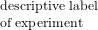 | Antisaccade |
|
|
|
|
| run | | 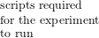 | |
|
|
|
|
| exp_id | 
| unique identifier | antisaccade |
|
|
|
|
| cognitive_atlas_concept_id | not required, warning | 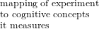 | trm_4b1968619b00b |
|
|
|
|
| contributors | not required | | |
|
|
|
|
| time | 
| 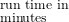 | 8 |
|
|
|
|
| experiment_variables | not required | | reaction_time |
|
|
|
|
| reference | not required, warning | | doi:10.1006/... |
|
|
|
|
| notes | not required | | should not wear
glasses |
|
|
|
|
| publish | | | True |
|
|
|
|
| template | 
| | jspsych |
|
|
|
|
| |
Table A.1: The fields required in the standard “config.json” for an Experiment Factory Experiment.
The definition of files and and a template are essential to validate the function of the experiments.
The examples for each field above are limited and not in JSON, full config.json are available for
inspection in the experiment folders (https://github.com/expfactory/expfactory-experiments)
.
A.2.2 Development of Experiments and Infrastructure
The Experiment Factory uses an open source development strategy, meaning that all code is publicly
available on Github (http://www.github.com/expfactory), and contributions are made to any of the code
bases via forking of repositories and pull requests. Full documentation about this process is available
(http://expfactory.readthedocs.org/en/latest/development.html#contributing-to-code). The code base has
been developed and tested on Linux (Ubuntu) and Mac OS.
Experiment Development
Contributing a new experiment constitutes adding a new folder to the experiments repository that meets
the minimal requirements for expfactory (i.e. including a JavaScript file to run the experiment,
and a configuration file to specify meta-data). Additional script and style files, along with
images, sound, or other files necessary for deployment, are optional. An experiment template
is provided for researchers to start with, and a recommended strategy is to copy and make
modifications to a similar experiment that already exists. Development of an experiment means some
familiarity with JavaScript and HTML/CSS, and ability to collaboratively work on Github.
Descriptions about the required variables for the configuration file are provided (Table ??). To
test experiments, the user has several options. The Experiment Factory software command
line tool can be run from within any experiment folder to open up a web browser to test a
single experiment manually with “expfactory –preview,” to test a single experiment with an
experiment robot using “expfactory –test,” or to validate the configuration file with “expfactory
–validate.”
See full documentation at http://expfactory.readthedocs.org.
Documentation and Infrastructure Development
Infrastructure and methods are useless without proper documentation. The Experiment Factory uses the
sphinx documentation tool, served with the Experiment Factory Github repository, meaning that it is built
automatically when the code base is updated. This documentation standard uses restructured text syntax (rst)
(http://docutils.sourceforge.net/rst.html). A set of pages have been written to supplement the functions
that the module provides, and also provided is documentation for how to contribute to documentation
(http://expfactory.readthedocs.org/en/latest/development.html#contributing-to-this-documentation).
Contributions for any of the Experiment Factory components from the larger community are welcomed and
encouraged.
Complete tutorials and further details are provided in our development documentation
(http://expfactory.readthedocs.org/en/latest/development.html)
A.3 The Experiment Factory Infrastructure
This section is intended for more technical readers and those interested in development of the Experiment
Factory modules, and a Glossary of terms (Table A.3) is provided to explain more technical jargon. The
modular strategy of the Experiment Factory infrastructure means providing separate Github
repositories for experiments, skeletons for a sequence of experiments (a “battery” of experiments),
and deployments. The Experiment Factory aims to be agnostic when it comes to deployment,
and to provide support for the current infrastructures that researchers find useful to deploy
their experiments. For example, experiments can be easily deployed into a folder structure to
plug in to Psiturk, either locally on a virtual machine, or served locally to study participants
without an internet connection. These static components are separate from the software that
drives integration of the components, and all components and software are completely open
source (Github, RRID:SCR 002630), allowing for collaborative specialization. A researcher
interested in developing an experiment need only add a new paradigm to the experiments
repository, and it will be available to all applications that use the Experiment Factory. A researcher
primarily interested in further developing the software can do so without needing to touch static
components. Currently the entire system is available for deployment by any researcher, either
locally or using a cloud server; ultimately, the Poldrack Lab also hopes to provide a hosted
version as a service open to all researchers. An overview of the infrastructure is included in
Figure A.1.
A.3.1 The Experiment Factory Software
The controller of the Experiment Factory is the Experiment Factory Python software
(https://github.com/expfactory/expfactory-python) that provides functions for working with components,
testing and validating experiments, and generating the final battery output based on the users
specifications. For example, after installing this tool, a researcher can, in one line, specify experiments and
an optional subject unique id, and a browser opens with the rendered battery. Behind this simple
functionality, the software is obtaining experiment and battery files from Github, validating the
experiments, and parsing configuration files to render the users selected experiments into the
correct HTML syntax. The finished HTML syntax, along with experiment code and static files,
is saved in a temporary directory, and a web server is opened to run the experiments as a
sequence.
The tool is also useful to developers in that any function in the software can be used in an external
application. By way of being a Python Flask application (see Table 3 for Term Glossary), running
the executable also provides a RESTful API to serve experiment meta-data, which can be
deployed in a local or cloud server environment. The application is easily installed with a package
manager (https://pypi.python.org/pypi/expfactory), and developers can collaborate on this
software to develop additional functions for use with the entire family of Experiment Factory
components.
A.3.2 The Experiment Factory Experiments
The Experiment Factory Experiments (https://github.com/expfactory/expfactory-experiments) are
the core of the infrastructure: at the time of this publication there are more than 80 coded
experiments available for deployment. Each experiment is a single folder in the Github repository
that contains a data structure (config.json) file with a standard set of key-value relationships
that provide meta-data on the experiment, and allow for its deployment. Table 1 provides an
overview of fields, requirements, and examples, each of which is checked before an experiment is
considered valid. For example, the definition of files necessary to run the experiment is essential
for the expfactory-python tool to validate and deploy the experiments, and the definition of
variables makes them available to the higher level applications. Each experiment is given a unique
identifier, the “exp_id” variable, that coincides with the folder name in the Github repository.
The boolean field “publish” makes it possible to quickly disable deployment of a particular
experiment, and the fields “reference,” and “contributors” are important to allocate credit to
developers. Finally, fields related to the Cognitive Atlas [? ] allow for a common place to document
details and references for the experiment, and define an experimental paradigm in an ontology
that makes assertions about the cognitive concepts measured by the task. This means that
a comparison can be made between tasks with regard to the processes or phenomena that
are measured (e.g., finding all tasks that are thought to measure the construct of “response
inhibition”). The “template” field specifies the library (e.g., JavaScript functions) that the
experiment is coded in, such that the deployment template will be customized for the library.
Although the initial release includes experiments coded using jsPsych, a Javascript library
that simplifies experiment creation, the modular framework and specification of this template
means that the infrastructure is ready to be extended to any web-based technology. This is
extremely important to allow for development of experiments using the most up-to-date web-based
technologies.
A.3.3 Experiment Factory Battery
The experiment-factory Battery (https://github.com/expfactory/expfactory-battery) is a simple skeleton
into which Experiment Factory experiments can be deployed as a cohesive set of experiments, called a
“battery.” The battery comes with a set of standard JavaScript and stylesheets common across the
templates (e.g., jsPsych), meaning that code that is consistently re-used across paradigms can be added to
this repository. The design of the battery allows immediate deployment to multiple infrastructures,
including Psiturk (locally or via a virtual machine), to a local machine to run on the fly, or a Django
(RRID:SCR 012855) application that can be served locally or on a server (expfactory-docker). This Django
application drives the (www.expfactory.org) interface.
A.3.4 Experiment Factory Docker
One of the main goals of the Experiment Factory is to provide an ability to deploy experiments and collect
data without any knowledge of programming, databases, or a command line. Under this requirement,
download of a command line application is one step too many, and for this reason we developed a
container-based application running at expfactory.org. The Experiment Factory Docker is a set of
containers that serve a Django application that can be run locally or on a server to provide a login interface
for labs to run experiments locally, or from the cloud. The application supports both http and https (secure
connections). Although the functionality is not exposed to the general user, the application is
also configured to deploy experiments to Amazon Mechanical Turk. The ease of deployment is
thanks to Docker, an emerging container-based architecture that allows for development and
deployment of applications in Linux containers (http://www.docker.com). Docker Compose
(http://docs.docker.com/compose) is a controller for running multi-container applications such as the
Experiment Factory, which uses separate containers for a nginx web server (nginx-proxy), a postgresql
database (postgres), a Celery job manager worker to run time- intensive jobs (worker), a database for
the jobs (redis), and the core application (expfactory), and protocol (uwsgi) for serving the
application. An overview of these containers, along with the images on the Docker Hub, are
provided in Table A.2 and Figure A.2, and a summary of terms are provided in a glossary
(Table A.3). For a more secure deployment (e.g., expfactory.org), it is recommended to link the
application to a separate database with an encrypted connection over running the postgres container
on the same server. Django (https://www.djangoproject.com/) is a Python-based framework
that comes with a strong user base, well-developed plugins for authentication, security, and a
backend database, and if desired, the Django application could be run independently from
Docker.
|
|
|
| Container Name | Purpose | Image |
|
|
|
| expfactorydocker_uwsgi_1 | | expfactory |
|
|
|
| expfactorydocker_db_1 | | postgres |
|
|
|
| expfactorydocker_nginx_1 | “Engine X” web server | nginx |
|
|
|
| expfactorydocker_worker_1 | celery worker for running tasks | expfactory |
|
|
|
| expfactory_redis_1 | | redis |
|
|
|
| |
Table A.2: Docker Containers utilized in expfactory-docker to run the www.expfactory.org.
The container images are downloaded from the Docker hub. The container image “expfactory”
corresponds to the expfactory-docker repository, and is built automatically from this source. For a
more substantial deployment, the database can be external to the instance (eg, Amazon RDS) with
an encrypted connection.
|
|
|
| Term | Definition |
|
|
|
| Amazon Mechanical Turk (MTurk) | |
|
|
|
| battery | |
|
|
|
| Celery | |
|
|
|
| Continuous Integration | 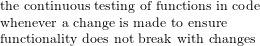 |
|
|
|
| Cognitive Atlas | 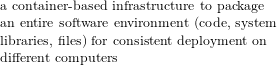 |
|
|
|
| Docker | 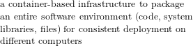 |
|
|
|
| Docker Compose | |
|
|
|
| Django | |
|
|
|
| Flask | 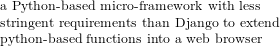 |
|
|
|
| jshint | |
|
|
|
| jsPsych | |
|
|
|
| Psiturk | |
|
|
|
| Selenium | 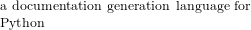 |
|
|
|
| Sphinx | 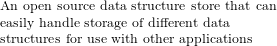 |
|
|
|
| Redis | 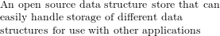 |
|
|
|
| uWSGI | |
|
|
|
| |
Table A.3: Glossary of terms for technical jargon, software, and tool references.
A.3.5 Experiment Factory VM
Deployment of a battery to a virtual machine, whether locally or to the cloud, is made possible by the
expfactory-vm repository. This repository contains Vagrantfiles that can be used with the Vagrant
software (http://www.vagrantup.com) to run a local Virtual Machine, or one deployed via
Amazon Web Services. The files can be used “as is” to deploy a battery with all experiments, or
generated through the expfactory-python executable to allow a user to define a custom set of
experiments.
A.4 Design and Implementation Choices
A.4.1 Modular Framework for Open Science
The choice to use Github, and to separate the Experiment Factory into its underlying components
(experiments, battery, docker, documentation, and vm) was a specific choice to allow specialization
and collaboration in development. Github offers version control, management of code, and
collaboration between teams, along with features such as reporting issues, discussing changes, and
managing documentation. All versions of code are archived, and multiple features can be worked on
simultaneously by any researcher with an internet connection. Github also provides Continuous
Integration, or automatic testing of code, both for the experiments and expfactory-python, discussed
next.
A.4.2 Software testing for the Experiment Factory
An essential component of software development is continuous testing of all functions whenever
changes are made to the software in the case that a change breaks an essential functionality.
This task, called Continuous Integration, can be done automatically when new changes are
proposed to code on Github with services like CircleCI ((https://circleci.com/) and Travis
(https://travis-ci.com/). The base software to run the Experiment Factory (expfactory-python)
is consistently tested in this fashion, however a significant challenge in the development of
this infrastructure was ensuring functionality of the experiments themselves. An error in an
experiment at run-time would end a battery, and must be avoided at all costs. Toward this goal,
the Experiment Factory has several strategies for testing experiment code in a Continuous
Integration environment. First, testing of experiments includes using jshint, a JavaScript quality
tool, to parse experiment code files for static errors. The validation of experiments config.json
data structures also occurs in the Continuous Integration environment, as does testing the
experiments at run-time. This is made possible by using an automated web browser, selenium
(http://www.seleniumhq.org), controlled by python functions from expfactory-python that respond to the
stimuli, akin to running an experiment robot. When experiments are modified, the experiment robot
is run over these changed experiments to ensure no run-time errors, triggering an error to
fail the Continuous Integration tests if any errors are found. During this process, developers
can discuss changes and issues using the standard forums for reporting issues and discussing
development that are provided by Github. This collaborative coding environment has been an
essential component for our group to develop, pilot, and discuss the application. Using version
control was an essential factor for the Experiment Factory to follow the vision of reproducible
science.
A.4.3 The Cognitive Atlas
The Cognitive Atlas [? ] is an ontology that represents current knowledge about cognitive science.
Integration of standard terms to describe the tasks, and consequently, the cognitive concepts that are
measured by them, allows for researchers to map all experiments into a common space, and use a common
language to describe the behavior and phenomena that are being measured. This means that, for example,
a researcher can quickly find experiments that are asserted to measure “risk seeking,” and such a feature is
not only important for definition of these experiments, but also for meta-analysis and reproducible
science. The expfactory.github.io experiment portal, along with documentation and testing of
experiments, offers a view to browse experiments based on the cognitive concepts that are measured,
as defined in the Cognitive Atlas. Mapping experiments to the Cognitive Atlas and making
assertions about the cognitive concepts measured by the experiments is powerful in that it allows
researchers to select paradigms based on the specific cognitive functions that they are thought to
measure.
A.5 Discussion
I have developed the Experiment Factory with a vision of open, collaborative science. The modular
application is flexible to be used by both developers and researchers without development experience,
and structured so that experiments must follow guidelines that will make them extendable to
multiple frameworks. I have integrated the Cognitive Atlas as a way to provide structure in
making assertions about what the experiments measure - any experiment tagged with a unique
identifier in the Cognitive Atlas can immediately be compared to other experiments on the
level of the cognitive concepts. While I am optimistic about this approach, there are several
limitations.
A.5.1 Software Versioning
A key challenge with any kind of deployment of this nature is software versioning. For example, the
current experiments and battery are up to date with the most recent version of the JsPsych
library, and upgrading this software would require developers to update current experiments.
Thus, a standard in software development is to instill that care is taken to make available
different versions of the software to support legacy implementations. Significant new releases
of dependencies can be integrated when the developer community decides they are needed,
and these same developers take responsibility for ensuring proper function of components.
This is the rationale for Continuous Integration to run tests of the function of software, which
has been implemented and provided by way of CircleCI (www.circleci.com) integration with
Github.
A.5.2 Ontology Development
The Cognitive Atlas may not contain every experimental paradigm that would be desired, and so it might
be required for a researcher to add a new experiment, extend documentation on an already defined
experiment, or better develop the assertions about the cognitive concepts that the task measures. Ontology
development is an ongoing process.
A.5.3 Operating Systems and Browsers Supported
The Experiment Factory experiments have been tested fully on Chrome and Firefox browsers running on
Linux and Mac OS systems. While there is a plan to develop a desktop application that will have cross
platform support (i.e., including Windows), this desktop application is not yet available. In the meantime
users are encouraged to use the tools on Linux and Mac OS, in Chrome or Firefox, and to use a virtual
machine for support on Windows systems.
A.5.4 Future Development
The Experiment Factory aims to keep the various components and experiments modern. I believe that the
same technology available and used in industry should be extended to researchers, and for this reason have
chosen the current approach that uses modern technologies such as Docker, Amazon Mechanical Turk,
and Amazon Web Services. Coinciding with this goal, I see a potential opportunity to deploy
experiments via social networks such as Facebook, and have plans to develop this ability. I have also
developed an easy deployment of a text file with survey questions to allow easy deployment of
browser-based surveys (expfactory-surveys). This is an important contribution as I believe the
JsPsych framework is an overly complex solution for the administration of simple form data. I
see great potential in the development of experiments beyond the jsPsych framework, and
have extended a collaboration to the lab of Vinod Menon at Stanford to use the framework to
deploy the first browser-based game. Given the open nature of this work, I encourage and invite
all researchers to join in the development of experiments, battery template, and deployment
infrastructures.
A.6 Conclusion
The Experiment Factory is a modular infrastructure that applies a collaborative, open source framework to
the development and deployment of psychology experiments. I am pleased to offer this as a resource for the
larger community, and excited to further the development toward the needs of users toward a vision of
reproducible science.
Appendix B
Visualization Best Practices for Complex Brain Connectivity Data
In this chapter, I discuss challenges and best practices for visualization of brain connectivity. Data
visualization in statistics for highly dimensional and complex data is essential for discovering
patterns, generating hypothesis, and developing subsequent models of natural phenomena. For the
field of brain imaging, this task presents numerous substantial challenges. For instance, highly
complex data must be processed and presented in a manner that is intuitive and transparent to
the viewer, and the visualization itself must strike a fine balance between revealing the data’s
inherent complexity and providing an easily digestible abstraction. Further, the visualization
strategy must be integrated with tools that enforce standards for data format. Finally, for ease of
use, the visualization must be quick and easy to navigate. This goal has not been achieved
for functional connectivity data, which is a burgeoning field of neuroimaging that attempts
to map the dynamic interactions between neural regions. Unfortunately, the standards for
visualization of such functional networks are trapped in a dated practice of producing static, and
often biased, figures, thus hampering effective scientific communication. Here I embrace this
substantial opportunity to bring cutting-edge web technology to brain imaging researchers. I
first review functional brain imaging and various approaches to visualize such data, and then
introduce MyBrain, an interactive, web-based prototype that allows for the exploration of these
functional connectivity matrices. A tool of this nature, suitably integrated into a web framework,
would immediately empower researchers to better explore functional connectivity data. This
will aid in generating novel hypotheses, sharing with others, and catalyzing discovery in the
field.
B.1 Introduction
A dataset or result is only as meaningful as the producer’s ability to effectively communicate its content,
making proper data visualization essential for the communication and synthesis of ideas. For highly
complex, multi-dimensional data produced in the field of brain imaging, this task presents substantial
challenges. One pertinent example occurs in a developing field of brain imaging, functional magnetic
resonance imaging (fMRI), which aims to understand the dynamic interactions between regions of the brain
that work together to produce cognition, thought and behavior – the so-called “functional connectome”
([? ? ? ? ? ? ]). The statistical analysis of this data is highly complex, and typically involves
preprocessing to remove unwanted artifactual noise, the performance of a statistical test, correction for
multiple comparisons to assess significance, and finally, the dissemination of results to the broader
neuroimaging community ([? ? ? ]). While much innovation has occurred in desktop applications to
visualize these data, significant results are typically reported in a textual format, with perhaps
one or two static images of a selected region of the brain. This dated strategy presents with
significant problems. For instance, the selection of a particular set of brain slices, different statistical
thresholds, choices of field of view, and coloring biases the image to communicate a strategic
point, potentially clouding the interpretation of results. Neuroimaging researchers cannot spend
substantial time developing novel visualization strategies, and so static images produced by standard
software ([? ? ? ]) become the basis for the visualization of the result. This standard is simply
unacceptable during a time when web visualization technology [? ] is blossoming, calling for
tools to not only properly visualize a functional connectome, but to make it available in a
web browser, interactive and intuitive, allowing for exploration of the data to generate novel
hypotheses.
This chapter presents a prototype of such a tool for exploration of brain functional connectivity data,
and a review of challenges faced for the visualization of this data. I will first review background of fMRI
connectivity analyses, with the goal of making transparent the data that defines the creation of these
functional connectomes. I will then introduce visualization as a powerful tool to explore distributions and
patterns in these data, and review current tools and strategies for functional connectivity visualization. I
will then briefly discuss current publication practices, and introduce a novel prototype interface that
could integrate into such practices that better empowers the researcher to visualize a functional
connectome. Finally, I will discuss current limitations of the prototype, and long term vision for this
work.
B.1.1 Derivation of the functional connectome
Functional magnetic resonance imaging (fMRI) is an established imaging protocol for assessing activity in
the human brain. fMRI measures the blood oxygen level dependent (BOLD) response, an indirect measure
of local neuronal signaling, that can subsequently be used to investigate functional differences between
individuals and behavioral states ([? ? ]). A typical experiment involves the collection of BOLD data from a
series of “voxels” (akin to three dimensional pixels) that cover the entire brain over the course of an
experiment (either task-based or “resting” quietly). This data is then analyzed in the context of a
hypothesis, and the basis of the hypothesis informs the resulting processing and statistical analysis. For
example, an investigator interested in temporal relations between different parts of the brain, called the
“functional connectome” will begin with a four dimensional dataset having three spatial dimensions, and
one temporal dimension. Each 3D voxel contains a value that reflects the BOLD response,
and so a plot of this value over time reflects a proxy of a neuronal activity at that spatial
location. Assessing the similarity of these timecourses for all voxels in the brain is the basis of
functional connectivity analyses, as voxels with correlated temporal activity are hypothesized to
be synchronously active. Thus, the result of a functional connectivity analysis is typically a
square connectivity matrix, where each coordinate (a voxel ([? ]), region ([? ? ]), or data-driven
parcellation ([? ? ? ])) represents some probability of connection (correlation) between two
coordinates. This presents with the first challenge of data visualization – the responsibility of
properly representing uncertainty in the data. The second challenge is thresholding to reduce the
dimensionality of the data. A typical imaging sequence with images of size 91 x 109 x 91 can result in
approximately 25,000,000K values in the matrix, however since spatially similar regions are
highly correlated ([? ]), it is ideal to reduce the size by defining meaningful parcels of related
voxels.
B.1.2 Methods for visualization of a functional connectome
The core goal of a functional connectome visualization is thus to reveal which parts of the brain are most
likely to be working synchronously. An ideal visualization will show where significant connections occur,
and how confident one can be about their presence. The visualization must use color, depth, dimensions,
thickness, and controls responsibly so this simple goal is not lost. Historically, the derivation of a static
brain image has been to inform about a specific result, however with the explosion of novel imaging
technology ([? ? ]), and databases ([? ? ? ? ? ]), this task has shifted from a reporting to an investigatory
one. I will first discuss the progression, advantages, and disadvantages of tools for visualizing connectivity
graphs, and transition into the methods for the development of a prototype to address current
challenges.
Traditional orthogonal views
The earliest derivations of functional connectivity reflect the limitations of early software, meaning
visualization of any brain-based data was limited to the orthogonal views of a three-dimensional
brain (Figure B.1a). Traditional software packages ([? ? ]) offer some version of a viewer to
overlay a functional result on an anatomical image, and the choice of slice to show reflects the
bias of the creator. A common analysis suite, Statistical Parametric Mapping (SPM) ([? ])
developed the “glass brain,” a maximum intensity projection, as a means to literally make results
transparent.
A jump to graph-based approaches
The traditional glass brain presents with the problem that these connectivity graphs are not focused on the
spatial locations themselves, but rather, the relationships between them. This is an example of a
visualization strategy not well fit to the data being visualized. A natural progression was to represent
connectivity matrices with traditional graph-based approaches, meaning networks of nodes and links
between them (Figure B.1b) ([? ]). Strength between connections, or uncertainty, could be illustrated with
subtle differences in color or line thickness, and regional information could be added based on positioning
or coloring. However, the weakness in these visualizations is that intuitive spatial representation is lost ([?
? ]).
Connectivity visualized on three-dimensional brains
The next logical step was to overlay these connectivity maps back onto anatomical brains (Figure B.1c) ([?
? ]). While this restores the spatial meaning, there are several issues with this approach. While
three-dimensional renders are more visually appealing, the added dimension risks over-complicating the
visualization ([? ]), or taxing the web browser ([? ]). Further, a static visualization of a three-dimensional
image can hide data.
Bundled connections
These early visualizations shed light on another important observation – it is more important to synthesize
what the links represent than visualize the links themselves. Therefore, the field returned to more
traditional “graph based” approaches. With previous methods, distance represented spatial distance in
anatomical space. With new methods, distance represents connection strength ([? ]). The “force directed
graph” (Figure B.1d) available in a software package like Gephi ([? ]) was a powerful strategy
to very quickly show functional relationships between regions. The idea of “bundling” grew
out of this work, or grouping connections that might be grouped based on an unsupervised
hierarchical clustering of the data (Figure B.1e) ([? ? ]). It followed to neatly organize this data
in a circle, a graph called a “connectogram” ([? ]), and arrange the nodes around the circle
to reflect positioning in the brain from front to back. This is the current state of functional
connectivity visualization, which must be better integrated into web browsers and journals for
publication.
B.1.3 Integration of visualizations with technology and publication standards
The sheer complexity of these datasets contrasts with the limitations of the amount of data that can be
shown in a web browser, which is largely dependent on the memory of the machine accessing it. Methods
such as caching, edge computing, data replication, and proper utilization of database querying make the
goal of showing some aspect of functional connectivity data a reasonable one. In print media, the standard
of publication is tied back to our preference to read books, and scientific journals themselves, which dates
back to 1665 when Philosophical Transactions of the Royal Society was released as the first
exclusively scientific journal. The modern version of this trend is distribution of electronic
articles, many of which are packaged nicely into PDF files. Researchers typically export an
image from a software tool, and then add additional labels or coloring in a vector graphics
program. This procedure is highly time intensive, and unfortunately, it is not a requirement to
share the production procedure. It would be highly valuable to have a web framework that
not only standardizes the data processing, but also provides standards for visualization of the
result.
B.2 Methods
B.2.1 Parcellation and connectivity matrix generation
Functional imaging data was provided by the MyConnectome project (http://www.myconnectome.org), for
which all data, processing protocol, and code is publicly available through a standard data sharing
agreement. For this prototype, a mean connectivity matrix from an individual was derived from all resting
BOLD scans. A parcellation procedure ([? ]) was used to define 565 distinct regions, each of which was used
to mask the data to define timecourses. Pearson correlation was used to generate the connectivity matrix,
M, [565 x 565].
B.2.2 Interface development
Web technology
Data Driven Documents, “D3” is a JavaScript library based on web standards (HTML, SVG, and CSS) ([?
]) that allows for generation of interactive, web visualizations. This technology was selected for development
of this interface due to integration with multiple platforms and browser types, as well as the utilization of
scalable vector graphics (SVG) to drive the visualization. A SVG is a vector based graphic, meaning that it
is well-suited for publication, and the graphic could be exported from the interface for this
purpose.
Visualization Strategy
The goals of the brain visualization were to provide a two-dimensional rendition of a brain that maintained
anatomical spatial accuracy in its representation. First, I created a matrix of parcel x,y,z coordinates, C
(565 x 3) and calculated the Euclidean distances between coordinates, resulting in a distance matrix,
Cd, of size (565 x 565). I then used the cmdscale function in R ([? ]) to transform the three
dimensional matrix into two-dimensions. MDS is a method for dimensionality reduction that can
visualize any N dimensional dataset in fewer dimensions, allowing for projection of the three
dimensional coordinates onto a two-dimensional plane. The algorithm works by placing each of the
three-dimensional points in such a way so that similarity between points is preserved in distances
([? ]). This resulted in a flat axial image of brain coordinates onto which connections can be
mapped.
Data Filtering
Portrayal of all 565 x 565 = 319,225 connectivity values in the matrix would generate a slow visualization,
and so it was decided to threshold values to include the top 1% of both positive and negative values using
the “quantile” function in R ([? ]) for a total of N=3,914.
B.2.3 Design choices
Coloring, thickness, and size
The parcels that form the two-dimensional brain mapping are each colored by the functional network to
which they belong, and this coloring is consistent with a set of large buttons above the brain that the user
can click to turn “on” or “off” a particular network. The links are colored with a gradient, so in the case of
a connection between parcels from different networks, the color transitions seamlessly. The node size
changes dynamically to reflect the number of connections to it, and the viewer can click on nodes to
highlight connections.
Dimensionality
The next challenge was orienting the viewer in a three-dimensional space with a two-dimensional image. A
simple strategy was utilized that, upon moving the cursor over any particular parcel on the brain
map, shows the viewer an axial orthogonal slice with a bright red spot to indicate the parcel
location.
Data Values
An interface cluttered with data values can distract the viewer, and so “tooltips,” or boxes of information
that appear upon moving the cursor over an object in the visualization, were utilized to give feedback on
links strengths, and node x,y,z coordinates.
Interface Controls
The main control panel, including buttons to turn links associated with networks “on” or “off” and a slider
to threshold the connectivity value, is placed above the brain map for easy accessibility. Dynamically
changing summary statistics (mean, min, max, counts) are on the left panel. The right panel includes image
export options. The finished prototype is available at http://vsoch.github.io/mybrain.
B.3 Discussion
The MyBrain prototype is a novel, two-dimensional interface that would allow for easy exploration and
rendering of a functional connectivity matrix in context of the regions and functional networks that are of
particular interest to the researcher. While the short term goal of this prototype was to allow for
critical thinking about the challenges and goals of visualization of this data, the larger goal is to
develop a tool for a researcher to use for his or her data. Ideally, the neuroimaging community
will have a package or application program interface (API) with functions to easily generate
custom, interactive web visualizations. The ideal would be to integrate these visualizations into a
web-based tool with a server backend that can allow a researcher to securely log in, upload
raw datasets, and have the datasets processed in a standard way. The researcher could share
links or directly embed elements of the visualization in a blog post, publication, or simply
take static screen shots of a particular finding he or she has discovered when exploring the
data.
B.4 Conclusions
I have developed a web interface prototype that allows for visualization and exploration of functional brain
connectivity data. The interface is simple, intuitive, and allows for exporting of data to a format that would
be extendable to a publication figure. Tools of this nature are essential during a time when visualization is
so important for comprehending meaning from inherently complex data. This author is excited for what is
to come in the next decade to better empower researchers to share and communicate their hard
work.
Appendix C
Best Practices for Reproducible Research
An often overlooked component in the development of methods and data standards, essential to their
ultimate impact, is implementation to ensure broader use and reproducibility. Toward this goal, I discuss
best practices for conducting reproducible research, with an emphasis on infrastructure (Specific Aim #4,
Section 1.6). To supplement these examples, I describe novel web-based tools and visualization
strategies I have developed over my graduate career. In this chapter, I stress the emerging need for
improved software development practices in academia. I review the technology and frameworks
that are necessary to produce web-based tools that can be used for better standardization,
visualization, and ultimately reproducible science. I highlight the challenges, strengths, and what I
have learned from software developed during my academic career that strives to meet these
goals.
C.1 The Reproducibility Crisis
Making inferences from image comparisons requires much more than the existence of ontologies and
methods, it calls for the consistent practice of reproducible research. As current media has suggested [? ? ?
], the reproducibility of neuroimaging and cognitive science is messy at best. Reproducibility goes far
beyond the creation of a single database to deposit results, and factors such as careful documentation of
variables and methods [? ? ], how the data were derived [? ? ? ], and dissemination of results [? ? ] unify to
embody a pattern of sound research practices that have previously not been emphasized. Any single step in
an analysis pipeline that is not properly documented, or does not allow for a continued life cycle of a
method or data, breaks reproducibility. In this reality, it is clear that long term success in practicing
reproducible science is asking much more than domain expertise and publication from our
researchers.
The neuroscience community was shamed in 2013 when it was suggested [? ] that studies in
neuroscience were lacking statistical power, and failing the most fundamental goal of science: to contribute
evidence for a discovery and replicate the result. While large-scale efforts are contributing datasets of
substantial size ([? ? ]) to allow for the critical assessment of findings in neuroscience, a much more
substantial problem is the habits and standards that are acceptable for researchers to partake in from the
initial generation of an idea through the publishing of a completed manuscript. While a great burden
must be placed on the researchers to design sound experiments, conduct proper statistical
tests, and derive reasonable inferences from those tests, many of the challenges of practicing
reproducible science could be resolved with the advent of better tools, meaning resources for
performing analysis, visualizing and capturing workflows, and assessing the reproducibility of a
result.
C.1.1 The components of a reproducible analysis
A reproducible analysis, in its truest definition, must be possible to do again. This means several key
components for the creation and life cycle of the data and methods:
-
1.
- complete documentation of data derivation, analysis, and structure
-
2.
- machine accessible methods and data resources
-
3.
- automatic integration of data, methods, and standards
A basic first question is whether it is reasonable to asking for these components from a neuroimaging
research. The last few decades of neuroimaging research have been primarily dominated by collection of
small datasets, and derivation of custom pipelines or manual processing in graphical interfaces
using a standard suite of software [? ? ]. Under these circumstances, it has been shown that
results can vary based on operating system [? ], choice of analysis parameters and processing
strategy, and the data itself. The Stanford Center for Reproducible Neuroscience at Stanford
University [? ] founded by Russ Poldrack in 2015 was a first step in addressing the disorganized
nature of neuroimaging analysis working on methods and tools to instill standards and best
practices [? ] into the production of new results. The center aims to capture the difficulties
associated with the proper analysis of datasets by offering reproducibility as a service. A truly
reproducible analysis requires the collection, processing, documentation, standardization, and
sound evaluation of a well-scoped hypothesis using large data and openly available methods.
From an infrastructural standpoint this extends far beyond requiring expertise in a domain
science and writing skills, calling for prowess in high performance computing, programming,
database and data structure generation and management, and web development. It may not be
feasible to expect an already heavily burdened academic researcher to provide consistently
standardized, well-documented, and machine accessible products with varying and potentially limited
resources of a university. Further, the limited time of four to five years of graduate training is not
substantial to train both biological domain and informatics experts. Thus, the center offers a
novel framework to take on this burden and offer reproducible analyses as a service. Such a
service would allows for the scientist to focus on the sound acquisition of data, and on his or her
expertise in asking the original biological question. Under such a framework, the list of best
practices for reproducibility can not only be a suggestion, but an implemented, standardized
reality.
C.1.2 Documentation
While an infrastructure that manages data organization and analysis will immediately provide
documentation for workflow, this same standard must trickle into the routine of the average
neuroimaging scientist before and during the collection of the input data. The research process
is not an algorithm, but rather a set of cultural and personal customs that starts from the
generation of new ideas, and encompasses preferences and style in reading papers and taking
notes, and even personal reflection. Young scientists learn through personal experience and
immersion in highly productive labs with more experienced scientists to advise their learning. A lab
at a prestigious University is like a business that exists only by way of having some success
with producing research products, and so the underlying assumption is that the scientists in
training should follow suit. The unfortunate reality is that the highly competitive nature of
obtaining positions in research means that the composition of a lab tends to weigh heavily in
individuals early in their research careers, with a prime focus on procuring funding for grants
to publish significant results. Thus, it tends to be the case that young scientists know that
it’s important to read papers, take notes, and immerse themselves in their passion, but their
method of doing this is unguided. In this scenario, a reasonable solution is not to place higher
expectation on the already encumbered scientists, but to provide them with tools for learning and
documentation.
Documentation of Code
In computational fields, it is typically the case that the most direct link to reproducing an analysis is not
perusing through research prose, but by way of obtaining the code. Writing is just idea and hope until
someone has programmed something. Thus, a researcher in a computational field will find it very hard to
be successful if he or she is not comfortable with version control [? ]. Version control keeps a record of all
changes through the life cycle of a project. It allows for the tagging of points in time to different versions of
a piece of software, and going back in time. These elements are essential for reproducible science practices
that are based on sharing of methods and robust documentation of a research process. It takes very
little effort for a researcher to create an account with a version control service (for example,
http://www.github.com), and typically the biggest barriers to this practice are cultural. A researcher
striving to publish novel ideas and methods is naturally going to be concerned over sharing
ideas and methods until they have been given credit for them. This calls for a change not only
in infrastructure, but research culture, and there is likely no way to do that other than by
slow change of incentives with example over time. It should be natural for a researcher, when
starting a new project, to immediately create a repository to organize its life-cycle. While
we cannot be certain that services like Github, Bitbucket, and Sourceforge are completely
reliable and will exist into infinitum, this basic step can minimally ensure that work is not
lost to a suddenly dead hard-drive, and methods reported in the text of a manuscript can be
immediately found in the language that produced the result. Researchers have much to gain in
using these services. If a computational graduate student is not using and established in using
Github by the end of his or her career, this is a failure in his or her training as a reproducible
scientist.
On the level of documentation in the code itself, this is often a personal, stylistic process that varies by
field. An individual in the field of computer science is more likely to have training in algorithms and proper
use of data structures and advanced programming ideas, and is more likely to produce computationally
efficient applications based on bringing together a cohesive set of functions and objects. We
might say this kind of research scientist, by way of choosing to study computer science to
begin with, might be more driven to develop tools and applications, and unfortunately for
academia will ultimately be most rewarded for pursuing a job in industry. This lack of “academic
software developers” is another problem that I address later (Section 5.2), as it is arguably
the prime reason that better, domain-specific, tools do not exist for academic researchers. An
epiphany that sometimes takes years to realize is the idea that documentation of applications lives
in the code itself. The design, choice of variable names and data structures, spacing of the
lines and functions, and implementation decisions can render a script easy to understand, or a
mess of characters that can only be understood by walking through each line in an interactive
console. Scientists in training, whether aiming to build elegant tools or simple batch scripts,
should be aware of these subtle choices in the structure of their applications. Cryptic syntax and
non-intuitive processes can be made up for with a (sometimes seemingly) excessive amount of
commenting. Donald Knuth introduced the idea of “literate programming,” [? ] a methodology that
includes both code and documentation in a single document. Prime examples include iPython
notebook, R-markdown, and syntax highlighting in online material to combine code and text.
Whether the researcher adds substantial comments, uses a literate programming methodology,
or communicates through variable naming and flow of code, the goal is equivalent: to ensure
that a researcher’s flow of thinking and process is sufficiently represented in his programming
outputs.
Visual Documentation
Documentation can be enhanced with better tools. For example, automated documentation tools (e.g.,
Sphinx for python) [? ] can immediately transform comments hidden away in a Github repository into a
clean, user friendly website for reading about the functions. Scientists should be provided with these
modern services because arguably, dissemination of a result is just as important (if not more important)
than generation of the result itself. An overlooked component toward understanding of a result is
providing the learner with more than a statistical metric reported in a manuscript, but a cohesive
story to put the result into terms that he or she can relate to. Visualization accompanied with
a story to connect the result to ideas that are easy to synthesize can better distribute the
result to both other researchers and the larger community. For this reason, results cannot only
live in publications, but must be extended to visual documentation such as websites, blogs,
and media sources. What this means is that it might be common practice to, along with a
publication, write a blog post and link to it. This process should be easier than it currently
is, as not all scientists know how to maintain a web presence. For example, a typical poster
presented at a conference might be easily transformed into an interactive, online poster. Static
documents such as theses and papers might immediately be parsed for sophisticated natural
language processing applications [? ] to be readily find-able by search engines, and more readily
available for social media discussion. A scientist should be immediately empowered to publish a
domain-specific web report that includes meaningful visualization and prose for an analysis.
Importantly, it must integrate seamlessly into the methodology that it aims to explain, and associated
resources that were used to derive it. This desired functionality may be beyond the scope of the
academic researcher, and development of such resources more suited for a new level of emerging
scientist.
C.2 The Academic Software Developer
The need for reproducible science has brought with it the emerging niche of the “academic
software developer,” an individual that is a combined research scientist and full stack software
developer, and is well suited to develop applications for specific domains of research. In this section,
I will discuss this interesting space that exists between research and software development,
along with the challenges of developing software for reproducible science. As my expertise is in
neuroinformatics, I will provide example by way of tools that I’ve developed for reproducible neuroimaging
science. In Section 5.2.2, I talk about pyneurovault, cogat-python, and the NIDM-api - all tools
that I have developed during my graduate career to deliver neuroimaging-related databases
directly into applications. I then give a thorough overview of the modern technology required
for developing tools for reproducible research, including data structures, front and back-end
development, and high performance computing. In Section 5.3.5 I focus on virtual machines, and a
particular example of a reproducible workflow, the MyConnectome Project. I then describe a set of
web-based visualization tools that represent the extension of my research into the applied space. In
Section 5.3.6, I discuss pybraincompare, a python module to immediately deploy my semantic
and spatial metrics for image comparison, and visualize comparisons between pairwise maps.
We start with a review of modern infrastructure and data structures for developing these
applications.
C.2.1 Machine Accessibility and Data Structures
Resources for neuroimaging analysis should be machine accessible, and publicly available. While many
services for documentation (e.g., Google Docs), file storage (e.g., Amazon S3, Dropbox), and version control
(e.g., Github) offer seamless integration between a local machine and the cloud, this does not guarantee
that these resources are programmatically accessible. While it may be possible to move files and data by
way of a command line, content such as free text in documents and meta-data about files that is not
captured in the researcher’s workflow is lost forever. The goal of making resources machine
accessible by way of standard data structures is highly challenging in that there is a tradeoff
between complexity and usability. A data structure to describe a resource that is developed in
a way to capture every detail may be highly challenging to integrate into applications, and
turn developers away from using it. On the other hand, too simple a data structure may fail
to capture meaningful meta-data about the resource(s) it intends to describe. Ideally, these
standard data structures should be intuitive, easy to use, and modern. In this section, I will
provide examples of machine accessible resources that vary in the degree to which this goal is
met.
C.2.2 Application Programming Interfaces for Neuroimaging Research
The previously discussed NeuroVault database for obtaining whole-brain statistical maps, or the Cognitive
Atlas for providing a description of cognitive neuroscience, are not useful in applications if they existed
only as websites. Machine accessibility usually comes by way of an API, or an application
programming interface. Further, this API must be developed to provide a data structure that
encourages its use in the development of applications for research because it is intuitive, easy,
and modern. One of my first goals in my early graduate career was to develop these APIs for
the databases and web resources that I knew were important for distribution to the larger
public.
pyneurovault
The first step to developing an API is considering the two domains that are being connected. Neuroimaging
science is moving heavily toward the use of Python, or “pythonic” tools, and so it is a logical decision
that the NeuroVault database uses the Django (http://www.djangoproject.org) framework
as a back-end, as it is a python framework and will allow for seamless integration of these
tools into the functions of the database. This initial step can be seen as a strategy to integrate
the tools that neuroimaging scientists are developing into the larger framework of the web.
The next question is how to properly distribute the NeuroVault database as a repository of
brain maps, and for this I have developed a two-pronged strategy. First, NeuroVault must be
able to provide both researcher and other web applications with access to metadata about
images, and file locations to download images. Toward this goal, it was decided to provide
a RESTful (representational state transfer) API [? ], which means using hypertext transfer
protocol (HTTP) or urls to send (POST) and retrieve (GET) data. What this means is that
NeuroVault provides a set of formatted URLs (http://neurovault.org/api-docs) that users can use to
query the database, and retrieve results in the JSON (JavaScript Object Notation) format.
For a researcher who is comfortable with using different APIs, it is common knowledge that
these kind of APIs can integrate seamlessly into analysis pipelines in almost any language
simply by retrieving the web page, and parsing the JSON object into a data structure that is
familiar to the language and researcher. Other web applications, by default of the domination
of JavaScript over the internet, would be able to easily integrate this resource a well. As an
additional step, due to the fact that a large portion of neuroimaging researchers are comfortable
working in python, I developed pyneurovault (https://github.com/NeuroVault/pyneurovault), a
python wrapper for this RESTful API so that functions are designed to form the RESTful
queries, and convert filtering and specification of various parameters into easy to use functions in
python.
cogat-python
The Cognitive Atlas, by way of being an older database, includes a more standard RESTful
API based on a third-party language converting SQL commands to the relational database
to output the equivalent JSON data structures. I developed an equivalent python wrapped,
cogat-python (cogat-python.readthedocs.org) to immediately empower neuroimaging scientists most
comfortable with python to query the concepts, tasks, and contrasts in the atlas. This API
was released early 2015, and has been the driver behind the body of work presented in this
thesis. Interestingly, before the development of the RESTful API and python wrapper, the
Cognitive Atlas was equipped with a form of semantic technology for users and developers. This
technology, discussed in the next section, provides a clear example for how a web resource must be
matched to its users and easily integratable into analysis frameworks, otherwise it will not be
used.
expfactory-analysis
Akin to NeuroVault and the Cognitive Atlas, the Experiment Factory Docker infrastructure is a web
interface that holds behind it a mine of behavioral data. An additional challenge in this case is the fact that
this data might contain identifying information about participants that participated in a battery on
Amazon Mechanical Turk, and should not be publicly available. To address this concern and still provide a
RESTful API to serve results programatically, the application allows users with an account to generate
tokens that can be embedded in the request from any application to use it. To make this process easy, I
developed a Python wrapper to the Experiment Factory RESTful API (expfactory-analysis, available at
https://github.com/expfactory/expfactory-analysis) that, in one line, will retrieve paginated results given
an acceptable token:
from expanalysis.api import get_results
access_token = “abcdefghijklmnopqrstuvwxyz”
results = get_results(access_token=access_token)
While security and protection of personal health information (PHI) is outside the scope of this review,
it is an essential detail to many sources of data, and care should be taken to ensure protection of private
data when generating data structures and tools to query them.
C.2.3 The Vision of the Semantic Web
The semantic web is a set of standards released by the World Wide Web consortium for data structures
and standards [? ] that can be used to turn the internet into a web of data, instead of a web of documents.
The basic data structure that defines this standard is the Resource Description Framework (RDF), which
can be thought of as a text file that defines resources, and then describes how they relate to one another,
typically with the format of:
resource1 –> relationship –> resource2
These relationships, called “RDF triples” form the basis of a graph. The vision of the semantic web is a
beautiful one [? ]:
The overall vision of the Data Activity is that people and organizations should be able to share data as
far as possible using their existing tools and working practices but in a way that enables others to derive and
add value, and to utilize it in ways that suit them. Achieving that requires a focus not just on the
interoperability of data but of communities.
Unfortunately, there is a wide gap between the developers of this standard, and its application. RDF is
an example of a data structure that has a steep learning curve for use, and requires substantial effort by
semantic web folk to make its contents readily accessible to standard web developers. The main language to
parse these documents, “sparql” [? ], does not bring with it an intuitive understanding and easy of use that
is prevalent in a language like python. While it could be that this vision is sound and simply more work is
needed to refine the standard, this author believes that the standard is not being more integrated
into web applications because it’s just too hard. These standards are struggling not due to a
lack of time and care put into developing them, but because they do not easily extend to easy
integration into the workflows and practices that modern developers are accustomed to. As
a web developer, or a researcher that heavily uses Python, the first thought that comes to
mind when being exposed to a new data structure should not be “How do I get it out of this
format?” This is an unfortunate reality, and a risky pursuit to push such a data structure
that stands in sheer opposition to the way that people naturally think about modeling the
world.
The Neuroimaging Data Model (NIDM)
An example of a set of models that use RDF as data structures in neuroimaging is the The Neuroimaging
Data Model (NIDM) [? ]. NIDM is an extension of some of the World Wide Web consortium’s models to
describe the outputs of neuroimaging analyses, including Results, Experiments, and Workflows. The vision
of the NIDM working group is strong in that the standard aims to define a standard data
structure to export the output of an analysis, and extend to other applications. Recognizing
this importance and the difficulty of using RDF, I devoted a portion of my graduate career
to the development of web-based tools for neuroimaging scientists that integrates these data
structures.
The NIDM-Viewer
The object model called “NIDM-Result” is a data structure produced from analysis software that
describes the parameters used in derivation of a statistical brain map result. For example,
an NIDM data structure that goes along with a statistical brain map would describe peak
coordinates, their values, processing choices to describe the maps, and links to all other related
maps. This information would be useful to integrate into a web application, but tools to parse
the information from RDF itself and deliver the information in a web interface had not been
developed.
Using the NIDM Results data structure, my first effort was to develop an NIDM-Viewer than can
immediately visualize brain maps and associated significant coordinates in a web browser. I
created the NIDM-Viewer (http://vsoch.github.io/nidmviewer), which can be run from a local
machine or on a server to visualize and browse the result of a neuroimaging analysis. The
back-end technology to produce this output was a Flask (Python) application, meaning that the
Python modules could also be integrated into pythonic tools (e.g., Django). Thus, a logical next
step was integration of this viewer into the NeuroVault database (implemented in Django)
so that researchers sharing NIDM-Results can immediately and interactively browse these
results without needing to know the Sparql query language or interact with the data structure
(Figure C.2.3).
This is an example of distributing an easy to use tool that immediately empowers a neuroimaging
researcher to compare his or her result to others, as the viewer can render any set of NIDM-Results files
that are available to it.
The NIDM-api
While the NIDM-Viewer initially worked by way of embedding sparql queries into the application itself,
this workflow was extremely challenging from a development standpoint. The core issue was that
integration of Sparql queries into a browser, to query RDF and generate a web-friendly data structure
(JSON), was not standardized. The workflow that was required to generate the viewer, specifically having
expertise to write Sparql queries and run them in Python, would never be tolerated or even possible for a
standard web developer. I had the insight that the proper way to address this informatics problem would
be to serve the queries in a format that is tolerable and easy. My solution was to develop an open source
framework that would separate serve the results of Sparql queries by way of a RESTful API
(http://nidm-api.readthedocs.org) using a python web framework ([? ]), the NIDM-api. The second insight
was that the queries themselves should be served in an intuitive data structure (JSON), and
maintained separately from the software to serve them to allow for specialization of expertise. The
NIDM-api (manuscript under review) can dually provide a tool to serve Sparql queries against RDF
documents, and interactive web interfaces for generating new query objects and visualizing
results.
The logic behind this application is that the software cleanly separates the the queries themselves from
the application serving them by way of different Github repositories. Upon starting the application, the
most recent set of queries is programatically obtained from Github, and served to the user both in
interactive web interfaces and by way of a RESTful API. The query repository can be maintained by the
experts in the semantic web, and the framework to serve them by developers that may not have expertise
with sparql or RDF. Individuals with expertise in Sparql but possibly not programming skills can generate
and interact with queries via an interactive web interface (Figure C.2.3) and developers with
no expertise in sparql that want to perform queries don’t have to see or know that it exists.
This ensures that, if a software developer outside of the NIDM group wants to develop an application
that makes inferences over these data structures, he or she will not have to know or understand Sparql or
RDF to do so. For academic software developers, the lesson to be learned is to develop for the now, not for
the idealized future.
C.2.4 Frontend and Backend Web Frameworks
The development of tools for researchers, along with visualization of documentation and results, requires
both expertise for writing code on web or server for analysis (a “back-end”) or code that is rendered
directly in a web browser for the user (“front-end”). Thus, an academic software developer must have
expertise in both these domains.
Back End Frameworks
The back-end framework refers to the organization and choice of databases, machines, and any operation
that must be run on a server to ensure the proper function of an application. These operations are typically
not “seen” by the user, and require design choices that take into account the anticipated usage of the
application, security and redundancy, and the applications themselves [? ]. For example, when deploying a
reproducible workflow, the MyConnectome Project (Section 5.2.7), Elastic Load Balancing, a strategy to
deploy an application on several servers and direct incoming traffic to be balanced over the servers,
was needed to ensure consistent application availability. Servers to host web applications
must also make choices about whether to server secure (SSL) connections. For example, the
Experiment Factory integrates with Amazon Mechanical Turk, and a requirement for such an
application is that it provides a sure (HTTPS) connection. Such an application that will be used
concurrently by many users would also need a database optimized for this concurrency, such
as postgreSQL, ideally with encrypted data transfer between the application and database.
To achieve this, it was necessary to serve the encrypted connection (typically on port 443)
by way of authenticating the server with SSL certificates. This means that any user browser
navigating to the page has assurance that the connection is encrypted, and any data transfer is
protected.
The core of web-based applications includes several back-end components. Servers that
are accessible on the internet have been assigned to it an IP (internet protocol) address that
can be found by other machines, and have a web server open (typically at port 80 or port
443 for secure connections) with permission to allow incoming traffic. A typical application
carries with it data, and so a relational database [? ? ] is the bread and butter of modern
data storage, and in some cases external e services [? ? ] are appropriate for retrieval of static
files. There are various choices for web servers [? ], as there are machines and hosts [? ], and a
developer looking to configure a machine typically makes his or her choice based on price,
availability of development tools [? ], and previous experience. The take home point is that
the setup of the back-end technology for any application or service must be done with care
and concern for the data being served, the users, and the longevity and affordability of the
application.
Application Frameworks
The back end framework can be seen as a bassinet to give security and stability to that which it is
meant to take care of, the application itself. An application framework refers to the libraries of functions
that perform operations on the data, and generate a result for the frontend application, the part of the
infrastructure that is “seen” by the user. Choice of an application framework is incredibly important as it
can streamline development. For early applications, the standard was to write custom php [? ]
functions to work with a relational database and return queries to the front end. These scripts
developed into standardized content management systems (CMS) that cleverly packaged base
infrastructures and functions to work with databases, giving developers the ability to write
custom script “plugins” to extend use of the application. My earliest work in graduate school
(http://vbmis.com/bmi/noisecloud) provided a database of spatial and temporal brain imaging features
associated with artifact in functional MRI accessible via an API by way of a CMS called Wordpress [? ].
This framework is estimated to encompass al most 60% of all CMS, and approximately a quarter of all
websites on the internet [? ]. However, the lesson I learned from this early experience is that
Wordpress is a blogging platform, and not well suited for research applications that require more
than sharing of text and image content. I realized quickly that Python-based [? ? ], or server
side JavaScript [? ] were more modern, flexible choices, empowering the user to create more
custom user experiences. Early in my graduate school career, tools for easy deployment of data
analysis content was not properly developed, and during this short time the statistics community
that uses software called R has made substantial progress to deliver these applications on the
web via a shiny server [? ]. Shiny has become a popular avenue for data scientists to publish
interactive charts, however several issue remains. Hosting of such applications is still limited
[? ] and expensive, and the server itself not easy to set up. It would be highly valued for a
University or academic institution to provide hosting, or minimally an avenue to serve these
research-oriented applications. Shiny is an example of just one framework, and an academic software
developer must be aware of and comfortable working with the most modern frameworks that can
easily transform data and scientific result into an interactive web-based experience. Beyond
expertise in setting up a server and coding an application, this requires front-end expertise as
well.
Front End Resources
The front-end framework refers to the library of functions and scripts that define the user experience, which
is typically text, images, and interactive content rendered on a web page. The base of this
content is HTML5 [? ], which is not a language but a syntax that a browser understands how to
render to properly display content. The style of a page comes by way of cascading style sheets
(CSS3) [? ], and dynamic content most typically comes by way of JQuery [? ], a javascript
library that is used by over 60% of the top 100,000 websites [? ]. While the front-end design
may seem less important than the application itself, the user experience is an often overlooked
essential component in software design that can make or break the success of an application.
There are several resources for front-end developers that combine components of front-end
design [? ? ? ], and during my time in graduate school I found myself devoting much time to
learning these frameworks to provide modern visualizations to accompany my research. I quickly
found it obvious that these resources were not developed specifically for research scientists, and
attributed the lack of equivalent resources for this purpose due to the inability of the academic
landscape to attract and keep experienced developers. For example, there is a web font, “font
awesome,” that provides standard web icons that are hidden among most websites. There are no
statistical symbols or icons related to specific scientific domains provided in this library, and as
an early graduate student I saw no reason that resources of this caliber could not exist for
researchers. During my graduate career I developed a web font, “font-brain” that would provide
meaningful symbols for neuroimaging scientists to embed into web applications, manuscripts, or code
repositories (https://vsoch.github.io/font-brain). While Font-brain’s usage is limited to a set
of my applications, it is an example of how modern resources are needed for brain imaging
scientists.
C.2.5 Development Architecture
Development of applications requires many individuals working collaboratively on a common code base. it
requires careful, regular testing of code (continuous integration), along with generation of a consistent
development environment for developers to ensure that server architecture matches development
architecture. In this section I will cover standard routine for collaborating on a code base (version control),
along with development workflows and container-based architectures.
Continuous Integration
As previously discussed, Github is an essential choice for software developers to collaborate on
coding projects in that it provides version control. An application’s code can live in a central
repository (repo), and the repository has different branches, or versions of the application that
are being actively developed. The repo typically has a “master” branch where the production
quality application is stored, and making changes to this branch is done by way of a “pull
request,” (PR) which is a process of comparing a modified branch’s code to the master, and
having a discussion about the changes. The PR is typically set up to automatically perform
“continuous integration,” or running a series of tests over all of the proposed changes to make
sure that no functionality has been broken by the changes. Continuous integration (CI) is
provided to developers as a service [? ? ], and can be used to test the application on different
system setups, as well as render application outputs that are static files. Writing good tests
is an art in itself, and another important step in developing applications that aim to have
longevity.
While the base case of CI is to test a code base, it should not go unnoticed that such a service will allow
for running a snippet of code over any function of interest in a github repository. While not the original
intention, a service like continuous integration would allow for a researcher to share code, and if another
researcher copies (forks) the repo, the code could be run immediately to produce an output.
Container-based Architectures
A modern description of web technology would not be complete without a discussion of container-based
architecture. Docker [? ] has emerged as a promising framework to streamline development for reproducible
research [? ]. and development workflows. Docker is based on the idea of creating different “containers” for
each component of an application, and a container can encompass any single entity that can be
installed on a server. Containers can be shared [? ] to allow for reproducible workflows, and
utilize a system’s resources in a more resourceful way than installation of the equivalent number
of virtual machines [? ]. Developing an application with Docker means that it can easily be
deployed anywhere with root permissions [? ], and while this does not extend well to servers or
high performance computing (HPC) environments where this is not possible, it is a step in
the right direction to reproducible systems, and an improvement over previous methods [?
].
C.2.6 High Performance Computing
A major challenge to developing applications for science is the need for high performance computing (HPC)
[? ]. HPC is the use of massive grids of machines, connected together with a job management system [? ? ]
to run jobs that require high computational resource such a memory or storage in parallel. Most major
universities give researchers access to a grid of these machines, called a “cluster,” whether for free or for a
price. HPC can render an analysis that would take 8 months to run in serial done within an hour in
a parallel environment. The biggest challenge for researchers is not using HPC, but rather,
extending HPC to work in a cloud environment [? ], integrated into a web application. This is a
burgeoning area of development with much promise [? ]. Further, the HPC environment is not yet
friendly to container-based architectures that can extremely improve reproducibility, discussed
next.
C.2.7 Virtual Machines
The choice of a back and front-end web framework, as well as a strategy for collaborative development and
continuous integration says nothing about application deployment. While use of a hosted web server seems
like the ideal solution to share an application, it may not be appropriate for a research product such as an
analysis pipeline. Further, analysis pipelines are complex entities, often requiring the use of
multiple programming languages with different libraries, access to large data, and memory. In this
context, a reasonable solution, and on par with a container architecture, would be to package a
configuration into a virtual machine (VM). Virtualbox [? ] is a leader in virtual machine deployment
software, with wrappers such as Vagrant [? ] allowing for command line control of machines.
These virtual machines can not only deploy applications, they can also be used for development
environments. With Vagrant, a single file called a Vagrantfile is run to bring up an entire virtual
machine, and such a file can be shared easily on a service like Github. A virtual machine can be
generated and deployed on a user’s local machine, or straight to a cloud service like Amazon
Web Services (AWS). This kind of immediate packaging of an analysis holds great promise
for distributing reproducible workflows, and during my time at Stanford I have worked on
deploying several reproducible workflows in this fashion. A noteable example is the MyConnectome
Virtual Machine (https://github.com/poldrack/myconnectome-vm), which integrates genomic,
metabolomic, behavioral, and brain imaging data from multiple sources into an analysis that can be
immediately deployed to the cloud (http://results.myconnectome.org) or on a user’s local machine
(Figure C.1).
The core challenge was bringing together disparate data sources into one computational environment,
running complicated, time-intensive analysis, and keeping the user updated about progress and errors. A
solution was needed to obtain data, process it, and render a result for the user. My advisor Russell
Poldrack approached me when he started developing this pipeline, and challenged me to create an interface
to integrate into a virtual machine to interact with it. This task proved to be much more challenging than
anticipated. We quickly learned that the failure of a single download would put a stop in the entire
pipeline, which could take upwards of 12 hours depending on internet connectivity, and it would be
required for the user to have command line expertise to ssh into the virtual machine to debug or look for
logs that might hint about what went wrong. It was immediately clear that we needed some form of
communication of error and console output, and that the front-end user interface must dynamically
update as the back-end analyses are completed. First, to make the generation of results on the
virtual machine transparent to the user, I linked all outputs to links on the main interface,
and these links would activate and change from gray to green when the result was produced.
To keep the user alert to the timing of analyses, I generated logs of expected time based on
results that were generated, and wrote a function to reflect this timing in a progress bar on the
main interface. The lesson here is that there must be accurate communication between a user
and a tool, otherwise the tool is not serving its purpose to reflect what is happening server
side.
Finally, while many results were already web-friendly (e.g., ipython notebook or R-markdown rendered
into HTML), many results were tab delimited files that were not. My goal was to use modern web
technology to render both results and output and error logs in a meaningful fashion. Toward this goal, I
created an interactive interface to render error and output logs, and select result files from intuitively
organized drop down menus, and render in a sortable, clean table. The final addition of a single download
for all results completed the virtual machine. The complexity of this project brought to light that deploying
a reproducible workflow, as a custom application, is incredibly challenging, and must more care and
thought must be put into designing tools that make this process no more than the click of a
button.
C.3 Web Based Tools for Neuroimaging
We have reviewed the basic components of developing and deploying web based tools. Technology for
reproducible research means integration of these components, including servers and databases, and high
performance computing, while keeping user experience and proper documentation in mind to produce a
final product that serves as the dissemination of the result. In the modern age, a final product is typically
expected to have searching capabilities, intuitive design and visualization, and integration with cloud
resources.
C.3.1 Visualization
The sharing a result is almost impossible without showing something meaningful. The reason
for success of the internet as a platform for reading, learning, and everything, is primarily
because of the visual experience that it affords. This means that, while it is often undervalued,
visualization is an important, if not one of the most important, components for a web-based
application. Data visualization for highly dimensional and complex data can help to discover
patterns, generating hypothesis, and develop subsequent models of natural phenomena. The task
of rendering a single statistical brain map in a browser, or a matrix of connectivity data [?
]http://vsoch.github.io/mybrain/ is no simple thing. Modern javascript libraries such as D3 [? ] can
handle a few thousand objects in the browser before seeing huge detriments to performance,
and a queue technique using canvas [? ] could handle many more values, but renders them
statically.
Pybraincompare
To unite the processing of brain images using python and web visualization, I developed a python module,
pybraincompare [? ], that works as a tool to perform some analysis of interest with a brain image, and then
immediately renders the result in the user’s local browser. The tool can generate web reports for quality
analysis (QA), scatterplots to compare two brain maps, connectograms, as well as tree data structures to
render ontological relationships (Figure reffig:54).
Importantly, this python package also contains the spatial and semantic methods that have driven the
work of my thesis, allowing for a neuroimaging researcher to deploy the same methods in his or her
pipelines. As an example, pybraincompare is the driver behind the “image comparison” feature in
NeuroVault, taking responsibility for both doing the computations, and rendering a search interface
(Figure C.2) as well as pairwise scatterplots to assess the similarity of two images (Figure C.3.1 top
right).
Pybraincompare also brings with it functions to generate output using canvas, allowing for the
rendering of over 150K data points in under 3 seconds. The contrast between a canvas rendering that
allows for this number of data points and a D3 rendering that handles a few thousand demonstrates the
trade-off between interactivity and usability. Generation of a visualization must be done in a manner
that is intuitive and transparent to the viewer, and the visualization itself must strike a fine
balance between revealing the data’s inherent complexity and providing an easily digestible
abstraction.
Nifti-drop
The drawback of a tool like pybraincompare is that it requires a server or a local machine. As was
previously noted, the divide between a user’s computer and the browser is getting fuzzy. Most
user’s of web applications do not want to spend the time to download software, or even go
through extensive upload processes. This demand for instantaneous function led me to ask the
question if it would be possible to render a complex data such as a brain image directly in a
browser, and this resulted in nifti-drop (http://vsoch.github.io/nifti-drop/). First, a nifti file is
a standard data format in neuroimaging [? ]. It can store a 3D brain image, or a 4D brain
image, meaning a 3D image collected over time. The nifti-drop prototype uses modern web
technology, specifically the File Reader web API [? ] to allow for a user to drop one of these files
directly on the browser, and have the image data (the “brain map”) and the header information
(meta data about the image) render immediately in the browser. The viewer also supports
dropping an NIDM-Results data structure (Section 4.3.1) to immediately render the Contrast map
and associated points. This project uses JavaScript, HTML5, Bootstrap, along with the web
query language Sparql and FileReader, and putting all of these pieces together was highly
challenging.
Brain Browser and Niindex
As an extension to the nifti-drop, it seemed like a reasonable goal to generate a small application to
equivalently render a local brain map in the browser, but allow for serving of images from the user file system.
Toward this goal, I developed the Brain Browser (https://www.npmjs.com/package/brain-browser),
a node-js application [? ]. It then became apparent that this kind of functionality might be
desired for a server, and so I modified the standard File Browser behavior of a server to
immediately render any brain images in a subset of folders, a project that I called niindex
(http://www.vbmis.com/bmi/project/niindex/). This string of brain viewers serves as an example for the
kinds of ideas that can better fit servers, local computers, and web sites to host highly complex brain
imaging data.
C.4 A Future of Reproducible Science
The focus of this final chapter has been on the technology and modern practices for individual and
organized reproducible research. I have reviewed applications and virtual machines that I have developed to
exemplify how modern web and server technologies can be useful for researchers. The next
question pertains to how we can spur the development of these domain-specific tools, or provide
better resources for researchers to practice reproducible science. It is clear that we are in a
decade of change, and the development of better services, either provided by the university,
or by an emerging new level of “academic software developer,” can help this reproducibility
crisis.
If we have a vision for this kind of development, we must next determine the right path for making
that vision a reality. The standard now is for university systems to provide high performance
computing, some file storage, and limited places for web sites or blogs for groups to maintain an
interface to the public. It could be the case that a university establishes a university-wide resource
for reproducible tool development and training of researchers, or that the standard job-based
cluster resources are replaced with a container-based architecture that could capture and deploy
reproducible workflows. It could also be the case that a better collaboration with industry, and
providing research as a service, could save academia. A simple overview of best practices could be
provided to new students, and staff in the center might come from many flavors of science,
and would devote their time to developing domain-specific tools, or assisting researchers in
extending findings into tools that can be harnessed by others. Granting bodies might prioritize
establishing academic software developers across labs, and this expertise would be provided
on a local rather than university level. While many continuous integration, version control,
and hosting services seem to offer long term products, the harsh reality is that there really
exists no insurance about any single web resource “being around forever.” However, with sound
research practices like creating multiple copies (redundancy), assigning digital object identifiers
(DOIs), and creating proper documentation, we can maximize the longevity and archiving of our
results.